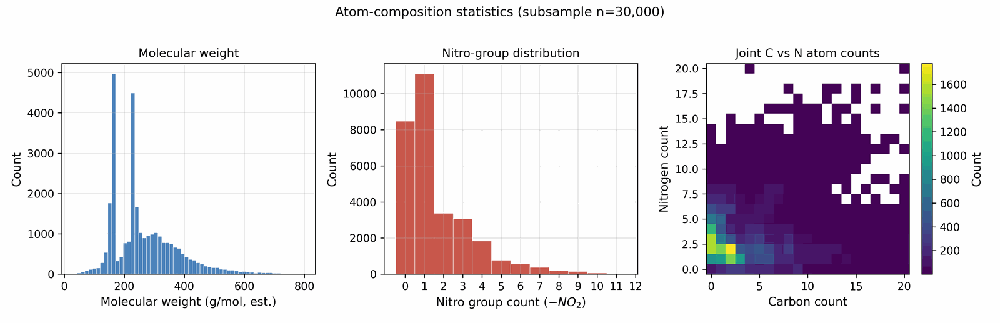
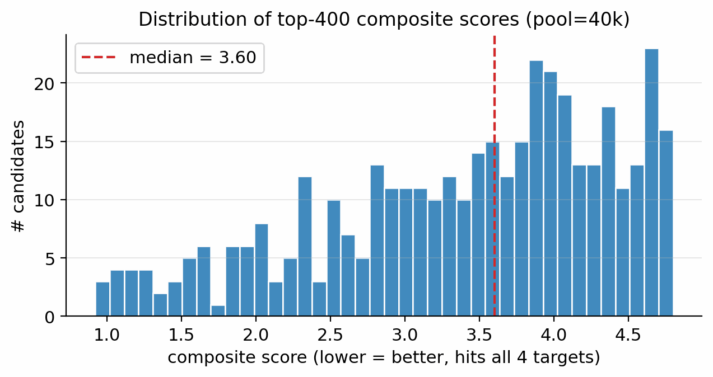
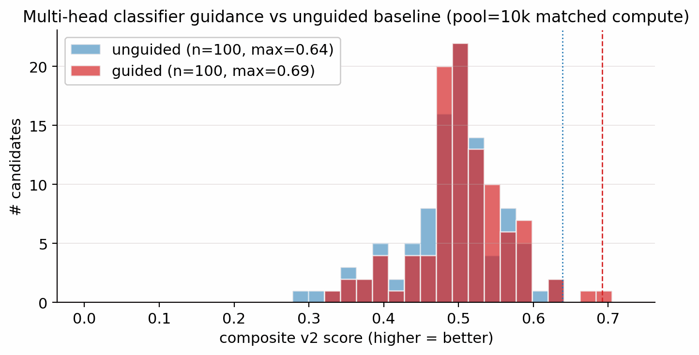

1 Afeka Tel-Aviv College of Engineering, Tel-Aviv, Israel; 2 Holon Institute of Technology (HIT), Holon, Israel
* Correspondence: apersteiny@afeka.ac.il
The labelled master, the unlabelled SMILES dump, and the motif-augmented expansion (Section 4) are assembled from the following public and quasi-public sources. Per-source row counts are post-canonicalisation, post-charge-filter, and post-token-length filter; they sum to more than the master because most molecules carry labels from several sources.
| Role | Source | Approx. rows contributed | Tier(s) | Citation |
|---|---|---|---|---|
| Labelled master (energetics) | Experimental crystallographic densities (Davis et al. 2024, cm4c01978 SI) plus measured \(\rho\), HOF, \(D\), \(P\) hand-compiled from Klapötke (2019), Cooper (1996), and the LLNL Explosives Handbook (Dobratz & Crawford 1985) | ~19 200 | A | [1], [2] |
| Labelled master | Thermochemical detonation-property dataset (curated CHNO + CHNOClF subset; HOF, \(D\), \(P\) on an EXPLO5 train/test split) | ~1 900 | B | [3] |
| Labelled master | Kamlet–Jacobs derived rows: density and HOF from literature compilations propagated through the K-J equation to give surrogate \(D, P\) (densities and HOF from Davis et al. 2024, cm4c01978 SI) | ~12 000 | C | [4], [2] |
| Labelled master | ML surrogate labels: in-house Uni-Mol smoke ensemble (trained on the union of A+B+C, eight outputs, 5-fold CV \(R^2 = 0.84\text{--}0.92\)) plus generative-model predictions (MDGNN, de-novo RL/TL sampling, q-RASPR), used to label rows with no higher-tier source | ~47 000 | D | this work, [5] |
| Negatives for viability classifier | ZINC-15 random subsample (drug-like, neutral, MW < 500), used as inert chemistry against which the RandomForest viability classifier is trained | 80 000 | n/a | [6] |
| Hard negatives | Gaming molecules mined from earlier generation pools (gem-tetranitro on small rings, polyazene chains, trinitromethane, gem-dinitrocyclopropane, etc.), encoded through LIMO and used as viab=0 latents in score-model training | 918 | n/a | this work, Section 4.11 |
| Hazard SMARTS catalog | NIST CAMEO Chemicals reactivity database [7] + ChemAxon “dangerous reactivity” SMARTS, distilled into the Bruns–Watson demerit catalog used by the SMARTS gate | n/a (rules) | n/a | [7], [8] |
| Unlabelled domain corpus | Augmented CHNO / CHNOClF SMILES dump assembled from public energetic-chemistry compilations (Klapötke reviews, patent-extracted SMILES, energetic-materials review papers); used only for the unconditional prior | ~380 000 | none | [9] |
| Motif-augmented expansion | Programmatic substitution of nitro, nitramine, azide, cyano, tetrazole, oxadiazole groups onto the labelled master scaffolds, then re-canonicalised and de-duplicated | ~1.08 M | none (only used in unlabelled prior) | this work |
| External novelty database | PubChem 2023 (PUG REST query on canonical SMILES) used to assess novelty of generated leads, not for training | n/a | n/a | [10] |
| Stability triage tool | xTB 6.6.1 (GFN2-xTB) used at sample-time triage on top leads (\(\le\)100 candidates), not in the training set | n/a | n/a | [11] |
What is and is not in the master. The labelled master contains canonical, neutral, single-component CHNOClF SMILES with at least one of {density, HOF, \(D\), \(P\)}. Salt fragments, mixtures, organometallics, isotopologues, and radicals are filtered. Per-row labels are aggregated to the highest-tier value available for each property; a row with experimental \(\rho\) (Tier A) and Kamlet–Jacobs \(P\) (Tier C) carries both with their respective tiers, and only the Tier-A density participates in the conditional gradient during diffusion training. No private, embargoed, or classified data was used; every row traces to a public or in-house-derived source.
Row-count overlap and deduplication. After cross-source canonical-SMILES deduplication the labelled master contains \(\sim 65\,980\) unique molecules (Tier-A \(\cap\) Tier-B is small but non-zero: \(\sim\)600 molecules carry both an experimental measurement and an independent DFT-derived label for at least one property; these contribute to a held-out cross-tier consistency check used during data-readiness audits). The unlabelled \(\sim 380\,\)k corpus and the motif-augmented \(\sim 1.08\,\)M expansion are deduplicated against the labelled master and against each other, yielding a final pretraining pool of \(\sim 694\,\)k unique canonical SMILES (this is the corpus referenced in the Section 2.4 Tanimoto stratification). Anchor compounds (RDX, HMX, TATB, FOX-7, PETN, NTO, TNT, etc.) appear in the labelled master and are not filtered from generation; their occasional surfacing in gated runs is an expected sanity-check rediscovery.
The labelled master is built by canonicalising every input SMILES with RDKit, dropping rows where canonicalisation fails or the molecule is charged after canonicalisation (we ban net charges), and aggregating per-molecule label rows so that each molecule carries the highest-tier value available for each of (density, HOF, det-velocity, det-pressure). Tier ordering is A > B > C > D. Heat-of-formation values are reported in kJ mol−1; densities in g cm−3; velocities in km s−1; pressures in GPa. We drop molecules with more than 72 SELFIES tokens (the LIMO max) and molecules whose token vocabulary falls outside the LIMO 108-token alphabet. The motif-augmented expansion exhaustively substitutes nitro, nitramine, azide, cyano, tetrazole, and oxadiazole groups onto the labelled scaffolds, then re-canonicalises and re-deduplicates.

B.0 Architecture summary. DGLD instantiates four neural networks plus two non-neural label sources. (1) The LIMO SELFIES-VAE (Fig 14) encodes every SMILES once into a deterministic 1024-d latent μ that the diffusion model treats as its data. (2) The denoiser εθ (Fig 16) is a 44.6 M-parameter FiLM-ResNet that reverses a 1000-step cosine DDPM in latent space; the production sampler runs two such denoisers in parallel (DGLD-H + DGLD-P, Section 4.8). (3) The multi-task score model (Figs 18 and 20) is a 4-block FiLM-MLP with a shared 1024-d trunk over (z, σ) with three active steering heads (Viability, Sensitivity, Hazard) and three auxiliary multi-task heads (Performance, SA, SC; Supplementary Section B.4); its per-head autograd gradients are the steering bus injected into DDIM at every sampling step. (4) Two external label sources, run only during training-label preparation, supply the targets for these heads: a Random-Forest viability classifier on Morgan FP+RDKit descriptors, and a Uni-Mol-based 3D smoke-model 2-fold ensemble that emits (ρ, D, P, T, E, V, HOF, BDE). Numeric layer counts, widths, parameter counts, and training optima for all four networks plus the Random Forest and smoke ensemble are tabulated below in Tables S2, S3, and S4 (LIMO VAE; denoiser + score model; label sources + reranker, respectively).
External label sources are training-time only. The Random-Forest viability classifier and the Uni-Mol smoke-model ensemble are not executed at every diffusion step. They are run once, offline, over the cached training corpus to manufacture the per-row labels (\(y_\text{viab}\), \(y_\rho\), \(y_D\), \(y_P\), HOF, etc.) that the multi-task score model is trained to regress and classify. At sample time, the only networks actually evaluated per DDIM step are the denoiser (one of DGLD-H or DGLD-P depending on the pool-fusion lane, Section 4.7 / Section 4.10) and the multi-task score model; the Random Forest and smoke ensemble do not appear in the sampling loop. The smoke ensemble is additionally invoked once per surviving candidate at re-ranking (Stage 1) to produce the (8-output) post-rerank property scores.
| Component | Hyperparameter | Value |
|---|---|---|
| LIMO SELFIES-VAE (Fig 14) | Latent dim | 1024 |
| SELFIES max length | 72 | |
| Vocabulary size | 108 | |
| Embedding dim | 64 | |
| Encoder layers | Linear(72·64=4608→2000)–ReLU–Linear(2000→1000)–BN1d–ReLU–Linear(1000→1000)–BN1d–ReLU–Linear(1000→2·1024) | |
| Decoder layers | Linear(1024→1000)–BN1d–ReLU–Linear(1000→1000)–BN1d–ReLU–Linear(1000→2000)–ReLU–Linear(2000→72·108=7776) | |
| Activation | ReLU (encoder & decoder hidden); log-softmax over vocab on output | |
| Loss | NLL reconstruction + β·KL (standard VAE ELBO; free-bits disabled) | |
| KL weight β | 0.01 (constant) | |
| Fine-tune steps | ~8500 on 326 k energetic-biased SMILES | |
| Code | combo_bundle/limo_model.py (LIMOVAE class) |
| Component | Hyperparameter | Value |
|---|---|---|
| Denoiser εθ (DGLD-P; Fig 16) | Backbone | FiLM-modulated ResNet, 8 residual blocks, latent 1024, hidden 2048 |
| Per-block layers | LayerNorm–Linear(1024→2048)–FiLM(γ,β)–SiLU–Linear(2048→1024) with residual add | |
| Parameter count | 44.6 M | |
| Time-embed dim | 256 (sinusoidal → 2-layer MLP) | |
| Property-embed dim | 64 per property × 4 properties = 256, plus learned mask token | |
| Activation | SiLU | |
| Loss | masked MSE on predicted noise ε with mask m | |
| T (diffusion steps) | 1000 (cosine schedule, Nichol & Dhariwal) | |
| EMA decay | 0.999 | |
| Optimizer / LR / wd | AdamW / 1e-4 / 1e-4 (cosine decay) | |
| cfg-dropout rate | 0.10 | |
| property-dropout rate (DGLD-P) | 0.30 | |
| oversample-extreme factor / quantile | 5×–10× above 90th percentile (high tail; matches Section 4.2) | |
| Multi-task score model (Fig 18) | Backbone | 4-block FiLM-MLP, latent 1024, hidden 1024, σ-embed 128 |
| Per-block layers | Linear(1024→1024)–LayerNorm–FiLM(σ-emb→(γ,β) over 1024)–SiLU–Dropout(0.1) with residual add | |
| σ embedding | Linear(1→128)–SiLU–Linear(128→128) | |
| Heads (6, parallel on 1024-d trunk) | Linear(1024→256)–SiLU–Linear(256→dk); dk=1 for viability/SA/SC/sensitivity/hazard; dk=4 for performance (ρ, HOF, D, P) | |
| Activation | SiLU (trunk); sigmoid on viability/hazard logits at use-time | |
| Per-head loss | BCE-with-logits (viability, hazard); smooth-L1 on z-scored target (SA, SC, sensitivity, performance), performance masked to Tier-A/B | |
| Noise-level curriculum | σ ~ U(0, σmax=2.0) per batch; zt=z0+σ·ε | |
| Optimizer / LR / wd | AdamW / 2e-4 / 1e-4 (cosine decay), grad-norm clip 1.0 | |
| Steps / batch | ~40k AdamW steps / batch 1024 (matches Section 4.10) | |
| Sample-time guidance | autograd of head losses w.r.t. zt; per-head clamp + alpha-anneal disabled (Section 4.10) | |
| Code | combo_bundle/train_multihead_latent.py (MultiHeadScoreModel) |
| Component | Hyperparameter | Value |
|---|---|---|
| Random-Forest viability classifier (training-label source) | Algorithm | scikit-learn RandomForestClassifier (CPU) |
| n_estimators / max_depth / min_samples_leaf | 200 / 22 / 4 (v2-hardneg; v1 uses CLI flags: see code) | |
| Class weight / random_state | balanced / 42 | |
| Feature dim | ~2069 = 2048 Morgan FP (radius 2) + 10 RDKit descriptors + 11 derived CHNO/OB features | |
| Training data | 66 k labelled energetics positives vs 80 k ZINC-15 random negatives + mined hard negatives (Supplementary Section B.1) | |
| Validation AUC | 0.9986 (v2-hardneg test split) | |
| 3D smoke-model ensemble (training-label source & Stage-1 scorer) | Backbone | Uni-Mol v1 (Zhou et al. 2023) regression head, 2-model scaffold-split ensemble |
| Parameter count | ~84 M per fold × 2 folds | |
| Inputs | 3D conformer atom-coordinate set (Uni-Mol native); not a raw voxel grid | |
| Outputs (8) | ρ, D, P, det-temperature T, det-energy E, det-volume V, HOF, BDE | |
| Validation R2 | 0.84–0.92 (5-fold CV, per output) | |
| Wrapper / inference | scripts/diffusion/unimol_validator.py; reset every 80 batches | |
| Re-ranking (Stage 1–2) | SA cap | 5.0 |
| SC cap | 3.5 | |
| Tanimoto window | (0.20, 0.55) |
B.1 Hard-negative augmentation (self-distillation).
Why it is needed. The Viability head's labels at round 0 are produced by \(y_{\text{viab}} = \mathbf{1}[\text{SMARTS pass}] \cdot P_{\text{RF}}(\text{viable}\mid \text{SMILES})\) (cf. Section 4.9). The Random Forest was trained on (labelled energetic corpus = positives, ZINC drug-like = negatives), a clean two-class boundary. The diffusion sampler, however, operates in latent regions between those two distributions, where the Random Forest generalises poorly: it scores high on small-skeleton polynitro and polyazene-chain motifs that are physically impossible. Self-distillation closes that gap by mining the model's own false positives in those gap regions and re-feeding them with explicit \(y_{\text{viab}}=0\) labels. The three-round training schedule (0 → 137 → 918 cumulative hard negatives; Fig 19) is specified in Section 4.11 and not repeated here. The held-out probe (7 anchors: RDX, HMX, TNT, FOX-7, PETN, TATB, NTO; 5 gaming molecules: gem-tetranitro on C2, trinitromethane, gem-dinitrocyclopropane, polyazene-NO2 chain, dinitromethane) confirms anchors hold at 0.86–0.99 while gaming molecules are demoted to 0.12–0.84. Supplementary Section D.9 reports an early variant (137 gaming molecules) versus the production variant (918 gaming molecules).
What's frozen vs trained. Across all rounds the LIMO encoder, LIMO decoder, denoiser (DGLD-H and DGLD-P), Random Forest viability classifier, and SMARTS rulebook are FROZEN. The only thing that updates between rounds is the score-model weights (shared trunk + heads); the Viability head receives the explicit hard-negative supervision, while the other heads see hard-negative latents as unlabelled (\(a_k = 0\) in their availability mask, Section 4.10). The score model after round 2 (corpus + 918 hard negatives) is the production checkpoint used in Section 2.
Procedure summary. The protocol of Fig 19 in five steps, repeated for at most three rounds:
Why a teacher Random Forest rather than direct binary labels. The score-model head trains on noised latents \(z_t\), so we need a label-from-SMILES function that can be applied at \(z_0\) once and the label carried through forward diffusion; a static (corpus, ZINC) membership table cannot label augmented rows or self-distilled hard negatives, since neither set has a fixed identity in either training distribution. The Random Forest gives a continuous probability in [0, 1] that yields smooth gradients (binary \(\{0, 1\}\) labels would zero the gradient almost everywhere on the sigmoid output). Decoupling the cheap CPU teacher (the Random Forest, retrainable in seconds when the corpus changes) from the expensive GPU student (the score-model head, which costs a full diffusion-pipeline retrain to update) lets either be revised independently. The five-stack of (1) Random Forest teacher, (2) SMARTS rules gate, (3) self-distillation hard negatives, (4) noised-latent training, (5) gradient-mode at sample time is what makes this label scheme contribute the headline lift despite the Random Forest alone being a coarse "energetic vs drug" discriminator.
Within a single call to train_score_model the hard-negative set is fixed input data, indistinguishable from the labelled corpus rows; the only "self-distillation" is the outer-loop iteration where the next round's training data depends on the current round's model. Operational note: a third-party reproduction can skip rounds 0–1 entirely by loading the published 918 hard-negative latents (released alongside the labelled master, Section 5) and running only one round of train_score_model with corpus + 918 negatives. This is the recipe used by the Zenodo-deposited production checkpoint.
B.2 Sensitivity head: heuristic vs literature-grounded variants. The default 5-head score model trains the sensitivity head against the hand-coded heuristic of Supplementary Section B.2 (nitro density, open-chain N-NO2 count, small-skeleton penalties), then z-scored. Because guiding generation with gradients of a head trained on a heuristic measures sensitivity reduction only against that heuristic, so we additionally fine-tune a literature-grounded variant: the trunk and the four other heads are frozen at the default-score-model weights, the sensitivity head is re-initialised, and the head is fit on 306 (canonical SMILES, observed h50) pairs from the Huang & Massa compilation [12] mapped to a sigmoid sensitivity proxy in [0, 1] (h50=40 cm pivot, slope 1.5 in log-h50 units). Training mixes a smooth-L1 loss on the 276-row h50 train split with a teacher regulariser pulling the new head toward the default-head prediction on 383 k auxiliary latents, weighted 1.0:0.25. The retrained head reaches Pearson r=+0.71 on a 30-row held-out h50 split and produces qualitatively correct relative orderings on a 5-anchor smoke test (TATB, h50~490 cm, scored 0.37; trinitro-isoxazole lead scored 0.55). The literature-grounded variant is a drop-in replacement for the default score model at sample time.
B.3 Per-head gradient-norm rebalancing (optional). Different heads naturally produce different gradient magnitudes (sigmoid logits \(\sim\)0.5; smooth-L1 z-scores \(\sim\)2.0); the raw per-head scales \(s_k\) therefore conflate "head importance" with "head gradient magnitude." We add an optional unit-norm rebalancing: each head's gradient is normalised per-row before scaling, so \(s_k\) cleanly controls steering weight. This makes the head-scale ablation cleanly interpretable; it is a no-op when only one head is active.
B.4 Drug-domain transfer heads (SA, SC). The score model architected in Section 4.10 has six heads. Four of them (viability, sensitivity, hazard, performance) are domain-native: each head's training-label source draws on energetic-domain data or chemotype rules (Random Forest discriminator on Morgan-FP descriptors of energetic vs ZINC; Politzer–Murray BDE chemotype-class fit; chemist-curated SMARTS hazard catalog plus Bruns–Watson demerits; Uni-Mol smoke ensemble trained on Tier-A/B labelled energetic compounds). The remaining two heads, SA (Ertl synthetic-accessibility regression, label source RDKit's sascorer.py) and SC (Coley SCScore retrosynthetic-complexity regression, label source Coley's pretrained SCScorer), are auxiliary multi-task heads (Performance, SA, SC): their label sources are calibrated on drug-discovery reaction corpora (Reaxys and pharma chemistry) and penalise uncommon ring fusions and rare fragments well-precedented in energetic-materials synthesis (CL-20-class polyaza-cages, hexanitrobenzene). The same drug-domain transfer issue applies to the rerank-time SA + SCScore caps (5.0 / 3.5) in Section 4.10; that is a separate layer (post-decode hard caps on canonical SMILES) and is unaffected by the discussion here.
Empirical sample-time evaluation. SA was tested at sample time in the Supplementary Section F.4 SA-axis matrix at \(s_{\text{SA}} = 0.15\). The result: turning SA-gradient on raised the top-1 composite penalty from 0.618 \(\pm\) 0.056 (SA-C2 viab+sens, no SA) to 0.698 \(\pm\) 0.015 (SA-C3 viab+sens+SA), a 0.080 (13 %) worsening. The interpretation is that the drug-domain SA score actively penalises the very chemotype family the diffusion sampler is targeted at. Production therefore uses \(s_{\text{SA}} = 0\). SC was retained as an architectural slot in the production score model for backward-compatibility with the 5-head predecessor (Supplementary Section B.1) but was never plumbed into the sample-time gradient sum (no \(s_{\text{SC}}\) is defined at sample time anywhere in the codebase or experiments); we make no empirical claim about its sample-time utility in this domain. The natural follow-up ablation, sweeping \(s_{\text{SC}}\) at non-zero values to test whether the drug-domain SC label has a similar inversion effect to SA, is left to future work.
Why retain the heads. Both SA and SC heads share the 1024-d trunk used by the four domain-native heads; their trained weights add \(\sim\)2 \(\times\) 256k parameters (negligible against the \(\sim\)8 M parameter score-model trunk; cf. Table S3) and the per-head supervised signal during training does not appear to harm the domain-native heads on the held-out anchor/gaming-molecule probe (the six-head production model and its five-head predecessor score the same on the anchor and gaming-molecule test sets within the per-round monitoring tolerance of Supplementary Section B.1). The cost of retaining is low; the cost of dropping (re-training the score model, re-running Supplementary Section F.4 to confirm no SA-axis dependency) is non-trivial. The heads are therefore retained.
Cross-references. The same SA / SC story appears in three places relevant to the headline: Section 4.10 Architecture (drug-domain transfer paragraph); Section 4.10 Sample-time gradient (the "Why \(s_{\text{SA}} = 0\) and where SC is" paragraph); Supplementary Section F.4 Multi-seed pattern (the SA-C3-vs-SA-C2 numerical result). This appendix consolidates them.
Complete configuration used throughout Section 2.2–Section 2.5. Each knob traces to the Section 2.6 ablation (or Section 4.15 hyperparameter sweep) that selected it.
| Knob | Production value | Justified by |
|---|---|---|
| Generative model | LIMO VAE + conditional latent DDPM with classifier-free guidance | Supplementary Section F.2 |
| Denoiser ensemble | DGLD-H + DGLD-P, pools fused post-decode | Section 4.8; Supplementary Section F.4 |
| CFG scale w | 7 | Section 4.15, Fig 23 |
| DDIM steps | 40 | prior-art default; not separately swept |
| Pool size | \(\ge\) 40k per denoiser, fused | Supplementary Section F.5; Section 4.15, Fig 24 |
| Score-model training | 4-block FiLM-MLP trunk, 6 heads, multi-task | Section 4.10; Supplementary Section F.1 (HN budget = 918) |
| Active steering heads | Viability (\(s = 1.0\)), Sensitivity (\(s = 0.3\)), Hazard (\(s = 1.0\)) | Supplementary Section F.3, Supplementary Section F.4 |
| Inactive heads | Performance, SA, SC (auxiliary multi-task only) | Supplementary Section F.4 |
| Anneal / clamp | \(\sigma_{\max} = 0\), \(C_g = 50\) | Section 4.12; Supplementary Section D.5 |
| Filter Stage 1 | Chemist-curated SMARTS gate | Section 4.13 |
| Filter Stage 2 | Pareto reranker on 4 axes, composite tie-break, top-K = 100 | Section 4.13 |
| Filter Stage 3 | GFN2-xTB, HOMO–LUMO gap \(\ge\) 1.5 eV | Section 4.13; chemist-set threshold |
| Filter Stage 4 – DFT | B3LYP/6-31G(d) opt + \(\omega\)B97X-D3BJ/def2-TZVP single-point | Section 4.13; Supplementary Section C.1 |
| Filter Stage 4 – calibration | 6-anchor LOO fit: \(\rho_{\text{cal}} = 1.392\,\rho_{\text{DFT}} - 0.415\), HOF\(_{\text{cal}}\) = HOF\(_{\text{DFT}} - 206.7\) | Section 2.3; Supplementary Section C.4 |
| Filter Stage 4 – K-J recompute | Closed-form K-J on calibrated \((\rho_{\text{cal}}, \text{HOF}_{\text{cal}})\); ranking-grade only | Section 2.3; Supplementary Section C.5 |
| Reranker property scoring | perf_score(\(\rho\), HOF, \(D\), \(P\)) ramp on Uni-Mol smoke ensemble outputs | Section 4.13 |
This appendix collects the DFT-methodology details that support Section 2.3 (per-lead validation and anchor calibration). Body Section 2.3 reports only the result table; readers who want to assess the methodology choices, the systematic-bias bands, and the calibration-extension recommendations should refer to this appendix.
C.1 Functional and basis-set choice. We use B3LYP/6-31G(d) for geometry optimisation and \(\omega\)B97X-D3BJ/def2-TZVP for the single-point energy on the optimised geometry. The B3LYP/6-31G(d) geometry is a long-standing standard for CHNO molecules (Casey et al. [5] use the same level for the Uni-Mol training labels we calibrate against), and the \(\omega\)B97X-D3BJ functional is recommended for energetic-materials thermochemistry by recent benchmarks (Goerigk et al., 2017). Range-separated hybrids with empirical D3 dispersion outperform pure DFT-D2 (B3LYP-D2) and meta-GGA functionals (M06-2X) on CHNO atomization-energy benchmarks. Functionals such as \(\omega\)B97M-V or B97M-V might offer marginal further accuracy gains (\(\sim\)1–2 kJ mol−1 per atom) but are not yet supported in the gpu4pyscf release we used; we list this as an explicit limitation. The basis def2-TZVP is the standard balanced triple-zeta with polarisation; basis-set extrapolation to def2-QZVPP would reduce the residual basis-set incompleteness error by \(\sim\)50 % but doubles the compute time and was deferred. For high-N azole rings (oxatriazole, tetrazole) B3LYP/6-31G(d) overestimates N-heteroatom bond lengths by ~0.01–0.02 Å relative to experimental crystal geometries, contributing to the elevated calibration slope (1.392) and representing an additional density uncertainty source beyond the packing-factor spread already quantified.
C.2 Thermal correction to 298 K. All HOFs in Section 2.3 are reported at 0 K (atomization-energy method gives \(\Delta H_f^{0\,\text{K}}\)). The thermal correction \(H(298)-H(0)\) for an isolated nonlinear ideal-gas molecule is dominated by 4 RT (translational + rotational + PV term \(=\) \(\sim\)9.9 kJ mol−1) plus a small low-frequency-vibration contribution (each mode \(\lt 200\) cm−1 contributes \(\sim\)RT \(=\) 2.5 kJ mol−1). For our top-10 leads with 0–6 low-frequency modes each, \(H(298)-H(0)\) ranges 10–25 kJ mol−1, smaller than the \(\pm 64.6\) kJ mol−1 LOO uncertainty from the 6-anchor calibration of the atomization energy (C.4). We report 0 K HOFs throughout for consistency; converting to 298 K standard HOF would shift values uniformly by ~10–25 kJ mol−1 with no impact on relative rankings or the K-J residual.
C.3 Calibration uncertainty: literature bias bands. The 6-anchor LOO RMS quoted in Section 2.3 (\(\pm 0.078\) g cm−3 on \(\rho\), \(\pm 64.6\) kJ mol−1 on HOF) is the internal fit-quality diagnostic. As an external sanity check we cross-reference these residuals against the published B3LYP/6-31G(d) systematic-bias literature. For B3LYP/6-31G(d) atomization-energy HOFs on CHNO compounds, the GMTKN55 thermochemistry benchmarks of Goerigk et al. [13] place the systematic atomization-energy bias of B3LYP with a double-zeta polarised basis at approximately 5–15 kJ mol−1 per atom, which scales to \(\sim\)100–250 kJ mol−1 at the molecular level for our 15–25-atom leads, consistent with the +170 to +224 kJ mol−1 offsets we observe at the RDX/TATB anchors. Casey et al. [5] report B3LYP/6-31G* HOF residuals on a CHNO test set with molecule-level RMSE in the \(\sim\)30–50 kJ mol−1 band (\(\sim\)5–10 kJ mol−1 per heavy atom), which is the closest published analogue to our setup and which we adopt as the residual-uncertainty band on calibrated HOFs in Section 2.3. For density, the Bondi van-der-Waals volume estimator [14] requires a packing coefficient that ranges 0.65–0.78 across observed CHNO crystal structures; our fixed value of 0.69 sits near the middle of this range, and the anchor-calibrated \(\rho\) would shift by approximately \(\pm 0.15\) g cm−3 across the full packing-coefficient interval, which dominates the \(\rho_{\text{cal}}\) uncertainty for any single lead.
C.4 6-anchor calibration (provenance and robustness). The calibration equation and leave-one-out residuals are stated in main Table 1 (Section 2.3) and are not repeated here; this note documents their provenance and numerical robustness. The four added anchors (HMX, PETN, FOX-7, NTO) were computed on two independent GPU compute runs (separate hosts); cross-run consistency was \(\Delta\rho \le 0.0002\) g cm−3 and \(\Delta\)HOF\(\,=\,0.0\) kJ mol−1 on every anchor, demonstrating run-to-run determinism of the GPU4PySCF pipeline. The density slope of \(1.392\) sits in the physically expected \([1.0, 2.0]\) range for the Bondi-vdW + 0.69-packing estimator under DFT-optimised geometry; a 2-anchor fit (RDX/TATB only) is under-determined, which is why the 6-anchor panel is used. The 6-anchor calibration is the source of truth for Section 2.3; per-anchor fit residuals are tabulated in Supplementary Section C.4. The calibrated DFT numbers in Section 2.3 remain ranking-grade rather than absolute-value-grade, with residual atomization-method uncertainty of approximately 5–15 kJ mol−1 per atom for B3LYP/6-31G(d) HOFs (Goerigk and Casey benchmarks). (The TATB experimental HOF = −141 kJ mol−1 is the 298 K condensed-phase value; applying HOF_cal = HOF_DFT − 206.7 to our 0 K DFT output (+82.9 kJ mol−1) gives −123.7 kJ mol−1, a 17 kJ mol−1 residual attributable to the 0 K → 298 K thermal correction not included in the linear offset; this is within the ±64.6 kJ mol−1 LOO RMS.)
C.5 Per-lead DFT-recomputed property table. Full per-lead B3LYP/6-31G(d) optimisation + \(\omega\)B97X-D3BJ/def2-TZVP single-point results for the chem-pass leads and the two anchors (RDX, TATB):
| ID | Formula | n_atoms | n_imag | ν_min (cm−1) | ZPE (kJ mol−1) |
|---|---|---|---|---|---|
| L1 | C3N4O7 | 14 | 0 | 13.4 | 169.7 |
| L3 | C3H2N6O6 | 17 | 0 | 35.9 | 244.7 |
| L4 | C2H2N6O4 | 14 | 0 | 52.0 | 205.5 |
| L5 | C2H1N3O6 | 12 | 0 | 23.8 | 153.0 |
| L9 | C3H5N9O8 | 25 | 0 | 0.0 | 396.4 |
| L11 | C3H3N5O7 | 18 | 0 | 9.1 | 271.4 |
| L13 | C2H3N5O5 | 15 | 0 | 24.8 | 232.1 |
| L16 | C3H2N6O6 | 17 | 0 | 35.9 | 244.7 |
| L18 | C3H4N6O6 | 19 | 0 | 12.9 | 303.0 |
| L19 | C2H2N2O6 | 12 | 0 | 47.6 | 172.8 |
| L20 | C3H1N5O5 | 14 | 0 | 0.0 | 190.6 |
| RDX | C3H6N6O6 | 21 | 0 | 40.3 | 375.0 |
| TATB | C6H6N6O6 | 24 | 0 | 6.8 | 419.1 |
Note on L3/L16. These two entries share identical formula, atom count, frequencies, and ZPE because they are the same compound (oxadiazinone-N-nitramine) generated under two distinct SMILES representations; they are counted as one unique structure in all scaffold-diversity tallies.
Note on L9/L20. ν_min = 0.0 cm−1 reflects a near-zero torsional frequency (soft dihedral mode within numerical precision of the geometry optimizer) rather than an imaginary mode or saddle point; n_imag = 0 confirms these are real local minima.
| ID | ρDFT (g cm−3) | ρcal (g cm−3) | HOFDFT (kJ mol−1) | HOFcal (kJ mol−1) | h50,model (cm) | h50,BDE (cm) |
|---|---|---|---|---|---|---|
| L1 | 1.801 | 2.093 | +229.5 | +22.9 | 30.3 | 82.7 |
| L3 | 1.731 | 1.995 | +322.0 | +115.4 | 82.6 | 38.3 |
| L4 | 1.692 | 1.941 | +498.8 | +292.1 | 27.8 | 38.3 |
| L5 | 1.693 | 1.942 | +53.6 | -153.1 | 33.4 | 24.8 |
| L9 | 1.669 | 1.909 | +536.5 | +329.8 | 21.9 | 38.3 |
| L11 | 1.663 | 1.900 | +47.6 | -159.0 | 26.5 | 38.3 |
| L13 | 1.634 | 1.859 | +321.8 | +115.1 | 31.0 | 38.3 |
| L16 | 1.731 | 1.995 | +322.0 | +115.4 | 82.6 | 38.3 |
| L18 | 1.619 | 1.839 | +388.7 | +182.1 | 38.6 | 38.3 |
| L19 | 1.666 | 1.905 | -166.7 | -373.3 | 45.5 | 24.8 |
| L20 | 1.723 | 1.983 | +194.7 | -12.0 | 74.1 | 38.3 |
| RDX | 1.632 | 1.857 | +240.4 | +33.8 | 26.3 | 38.3 |
| TATB | 1.663 | 1.900 | +82.9 | -123.7 | 89.2 | 82.7 |
L1 discrepancy. The score model predicts h50,model=30.3 cm (more sensitive) while the BDE estimate gives h50,BDE=82.7 cm (less sensitive), a factor of 2.7. The two methods disagree on L1 because the model was calibrated on a drug-domain distribution (few isoxazole-class nitro compounds in training), whereas the BDE formula classifies L1's Ar–NO2 bonds using the aromatic-nitro class typical (BDE~70 kcal mol−1). Neither route is authoritative for a novel chemotype; experimental impact-sensitivity testing is required.
Reference-class scaffolds. Three reference-class compounds (R2, R3, R14) flagged by the strengthened SMARTS gate of Section 2.4 were optimised with the same protocol; they are not chem-pass leads and are reported here for completeness. R2 (the N-nitroimine oxime-nitrate-imidazoline) is a reference-class compound flagged by the strengthened SMARTS gate, not a chem-pass lead:
| ID | Formula | n_atoms | n_imag | ν_min (cm−1) | ZPE (kJ mol−1) |
|---|---|---|---|---|---|
| R2 | C3H3N5O6 | 17 | 0 | 47.1 | 263.1 |
| R3 | C1H3N7O4 | 15 | 0 | 33.3 | 234.3 |
| R14 | C3H5N7O6 | 21 | 0 | 36.9 | 348.6 |
| ID | ρDFT (g cm−3) | ρcal (g cm−3) | HOFDFT (kJ mol−1) | HOFcal (kJ mol−1) |
|---|---|---|---|---|
| R2 | 1.699 | 1.950 | +117.3 | -89.4 |
| R3 | 1.642 | 1.871 | +521.7 | +315.0 |
| R14 | 1.604 | 1.818 | +437.4 | +230.7 |
Anchor calibration (6-anchor). Experimental \((\rho, \text{HOF})\) anchors: RDX \((1.82, +70)\), TATB \((1.94, -141)\), HMX \((1.91, +75)\), PETN \((1.77, -538)\), FOX-7 \((1.89, -134)\), NTO \((1.93, -129)\), in g cm−3 and kJ mol−1 respectively. Raw \(\omega\)B97X-D3BJ DFT outputs are tabulated in Table S7. The 6-anchor regression gives \(\rho_{\text{cal}} = 1.392\cdot\rho_{\text{DFT}} - 0.415\) and HOF\(_{\text{cal}}\) = HOF\(_{\text{DFT}} - 206.7\) kJ mol−1, with LOO RMS \(\pm 0.078\) g cm−3 on \(\rho\) and \(\pm 64.6\) kJ mol−1 on HOF (per-anchor residuals in Supplementary Section C.4). The 11 chem-pass leads calibrate to \(\rho_{\text{cal}} \in [1.84, 2.09]\) g cm−3 and HOF\(_{\text{cal}} \in [-373, +330]\) kJ mol−1. Using the calibrated \(\rho\) and HOF, the K-J formula recomputes \(D\) for all 11 leads on the calibrated branch:
| Lead | Uni-Mol \(D\), \(\rho\) | K-J raw DFT \(D\), \(P\) | K-J 6-anchor cal \(D\), \(P\) | residual (cal − Uni-Mol) |
|---|---|---|---|---|
| L1 trinitro-isoxazole | D=9.56, ρ=2.00 | D=7.85, P=27.3 | D=8.25, P=32.9 | −1.31 km s−1 |
| L3 oxadiazinone-N-nitramine | D=9.11, ρ=1.93 | D=6.50, P=18.3 | D=7.50, P=26.5 | −1.61 km s−1 |
| L4 5-ring tetrazoline-N-nitramine | D=8.98, ρ=1.87 | D=5.56, P=13.2 | D=6.71, P=20.9 | −2.27 km s−1 |
| L5 acyl oxime nitrate | D=9.21, ρ=1.93 | D=7.78, P=25.8 | D=7.99, P=29.6 | −1.22 km s−1 |
| L9 hydrazinyl tetranitramine | D=9.27, ρ=1.88 | D=6.44, P=17.6 | D=7.33, P=24.6 | −1.94 km s−1 |
| L11 acyl-nitramide nitrate-imine | D=9.30, ρ=1.90 | D=6.97, P=20.5 | D=7.88, P=28.5 | −1.42 km s−1 |
| L13 oxadiazoline | D=9.05, ρ=1.87 | D=6.39, P=17.0 | D=7.36, P=24.5 | −1.69 km s−1 |
| L16 oxadiazinone-N-nitramine (alt SMILES) | D=9.11, ρ=1.93 | D=6.50, P=18.3 | D=7.50, P=26.5 | −1.61 km s−1 |
| L18 vinyl azo-amino nitrate | D=9.00, ρ=1.89 | D=6.21, P=16.0 | D=7.09, P=22.6 | −1.91 km s−1 |
| L19 acyl C-OH nitramine | D=9.14, ρ=1.88 | D=7.24, P=22.2 | D=7.24, P=24.0 | −1.90 km s−1 |
| L20 \(\alpha\)-NO2 acyl-N-nitramine | D=9.12, ρ=1.91 | D=6.40, P=17.7 | D=7.41, P=25.8 | −1.71 km s−1 |
| RDX (anchor) | D=8.75 (exp) | n/a | D=7.43, P=25.0 | −1.32 km s−1 (vs exp) |
| TATB (anchor) | D=7.90 (exp) | n/a | D=6.93, P=22.0 | −0.97 km s−1 (vs exp) |
| HMX (anchor) | D=9.10 (exp) | n/a | D=7.52, P=26.2 | −1.58 km s−1 (vs exp) |
| PETN (anchor) | D=8.30 (exp) | n/a | D=8.24, P=30.6 | −0.06 km s−1 (vs exp) |
| FOX-7 (anchor) | D=8.87 (exp) | n/a | D=7.70, P=26.5 | −1.17 km s−1 (vs exp) |
| NTO (anchor) | D=7.93 (exp) | n/a | D=7.49, P=25.6 | −0.44 km s−1 (vs exp) |
Reading Table S10. The six anchor rows define the K-J under-prediction band on the same recipe: K-J\(_{\text{cal}}\) lands \(0.06\) to \(1.58\) km s−1 below experiment, with a mean of \(-0.92\) km s−1. Lead residuals against the Uni-Mol surrogate (\(-1.22\) to \(-2.27\) km s−1, mean \(-1.69\) km s−1) sit comfortably inside this anchor-defined band, and the \(-1.31\) km s−1 residual on L1 is one of the smallest in the lead set, consistent with L1's HMX-class regime placement.
C.5.1 E1 stability caveat: 1,2,3,5-oxatriazole stability literature. The 1,2,3,5-oxatriazole ring system has known ring-opening and thermal-decomposition pathways under acidic or high-temperature conditions (Sheremetev 2007; Katritzky 2010). Specifically, the endocyclic O–N(2) bond is the weakest in the ring (literature BDE estimates for the parent 1,2,3,5-oxatriazole: 130–155 kJ mol−1 depending on substituents, vs 250–290 kJ mol−1 for the C–N bond in the same ring); under thermal activation or Lewis-acid catalysis the ring opens to a reactive azide-nitrile-oxide zwitterion (Sheremetev 2007), a pathway that may preclude melting-point processing or conventional press-and-sinter consolidation. Our SMARTS catalog does not flag the parent ring as unstable because the heteroatom sequence N–O–N is not on the primary reject list, and a dedicated stability screen (BDE of the weakest N–O bond at \(\omega\)B97X-D3BJ level, plus DSC/TGA compatibility check) is required before E1 is promoted to synthesis priority. The Supplementary Section C.10 GFN2-xTB BDE scan places E1's weakest cleavage at \(92.7\) kcal mol−1 on the exocyclic C–NO2 bond and finds no ring N–O channel below \(180\) kcal mol−1 on a vertical cleavage from the parent geometry; the literature endocyclic-O–N value (130–155 kJ mol−1 \(\approx\) 31–37 kcal mol−1) refers to the activation barrier on the relaxed ring-opening pathway, which the unrelaxed scan does not capture. The two estimates are consistent in chemistry (nitro loss is the dominant primary channel at the parent geometry; ring opening is a secondary thermal/Lewis-acid pathway with a lower activation barrier on the relaxed surface). E1 is therefore a credible second-family candidate, but a relaxed-pathway BDE recompute and DSC/TGA screen are prerequisites for synthesis priority.
C.6 K-J residual decomposition by ρ/HOF sensitivity. Under the 6-anchor calibration L4's K-J \(D\) is \(6.71\) km s−1 against a Uni-Mol prediction of \(8.98\) km s−1, giving a residual of \(D_{\text{DFT-cal}} - D_{\text{Uni-Mol}} = -2.27\) km s−1 (Table S10). We decompose this residual against the K-J sensitivity slopes at L4's base point and ask what input shift in \(\rho\) alone or HOF alone would be required to close it.
| Mechanism | Required correction | Implausibility |
|---|---|---|
| Close residual via ρ alone | \(\Delta\rho = -2.27 / 2.47 = -0.92\) g cm−3; L4 calibrated \(\rho\) would have to drop from 1.94 to 1.02 g cm−3 | Lighter than water; chemically implausible for any nitrogen-rich CHNO crystal |
| Close residual via HOF alone | \(\Delta\)HOF \(= -2.27 / (-0.22 / 100) = +1032\) kJ mol−1; L4 calibrated HOF would have to rise from +292 to +1324 kJ mol−1 | Far above CL-20's HOF (~+460 kJ mol−1); physically extreme for a 13-atom CHNO neutral |
K-J sensitivity slopes at the L4 base point: \(dD/d\rho \approx +2.47\) km s−1 per g cm−3; \(dD/d\,\text{HOF} \approx -0.22\) km s−1 per 100 kJ mol−1. Both single-variable closures are implausible; the K-J residual at L4 is dominated by the gas-product distribution assumption rather than \(\rho\) or HOF input errors, with a secondary contribution from the 6-anchor calibration uncertainty (\(\pm 0.078\) g cm−3 on \(\rho\), \(\pm 64.6\) kJ mol−1 on HOF). The assumed gas-product distribution (CO2, H2O, N2 in fixed ratio determined by the C-deficient/O-rich switch) misrepresents the actual product mixture for compounds with low H content and high N density. The correct resolution requires a direct DFT calculation of the Chapman-Jouguet state via specialised codes such as EXPLO5 or Cheetah-2; the K-J recompute should be read as a regime-aware sanity check, not a paper-grade detonation prediction.
C.7 Population-level N-fraction stratification. To confirm that the K-J residual's regime dependence is not specific to L4 but a population-wide signal, we re-ran the same K-J formula on every Tier-A row of the labelled master that carries simultaneous experimental ρ, HOF, and \(D\) (n = 575) and stratified the residual \(D_{\text{K-J}} - D_{\text{exp}}\) by atomic N-fraction \(f_N = n_N / (n_C + n_H + n_N + n_O)\):
| N-fraction bin | \(n\) | mean \(D_{\text{exp}}\) (km s−1) | mean \(D_{\text{K-J}}\) (km s−1) | mean residual (km s−1) |
|---|---|---|---|---|
| [0.00–0.10) | 16 | 6.17 | 3.59 | −2.59 |
| [0.10–0.20) | 196 | 7.44 | 3.93 | −3.51 |
| [0.20–0.30) | 233 | 7.96 | 4.37 | −3.59 |
| [0.30–0.40) | 84 | 8.30 | 5.01 | −3.29 |
| [0.40–0.55) | 37 | 7.78 | 6.17 | −1.60 |
| [0.55–1.00] | 9 | 7.12 | 7.66 | +0.54 |
The residual flips sign across the N-fraction range: K-J systematically under-predicts \(D\) by 3–3.6 km s−1 in the low-to-mid N-fraction regime and shifts toward over-prediction in the high-N regime. Pearson \(r(f_N, \text{residual}) = +0.43\) (\(p = 4 \times 10^{-27}\), \(n=575\)). On absolute magnitude: this open-form K-J implementation uses \(Q \approx \Delta H_f / M_W\) without subtracting product-side enthalpies, which inflates the absolute residual relative to the closed-form K-J variant in the per-lead table; the trend across N-fraction is the diagnostic signal, not the absolute residual values. The Section 2.3 attribution is consistent with the population-level positive-correlation N-fraction trend (Pearson \(r = +0.43\)). Note: the mean K-J residual in the [0.55–1.00] N-fraction bin of Table S12 is positive (+0.54 km s−1), indicating apparent K-J over-prediction at this extreme N-fraction; this reflects the open-form Q approximation (Q ≈ ΔHf/MW without product-side subtraction); the per-lead Table S10 values use the closed-form K-J, for which the residual stays negative across this regime.
C.8 Scaffold-similarity to labelled master. Beyond Tanimoto on full-molecule fingerprints (Section 2.4), we report the GuacaMol-style "scaf" metric (mean and max nearest-neighbour Tanimoto on Bemis–Murcko scaffold fingerprints) against a 5 000-row sample of the labelled master:
| Condition | scaf-NN mean | scaf-NN max | unique scaffolds |
|---|---|---|---|
| C0 unguided | 0.469 | 1.000 | 369 |
| C1 viab+sens | 0.420 | 1.000 | 171 |
| C2 viab+sens+hazard | 0.372 | 1.000 | 199 |
| C3 hazard-only | 0.423 | 1.000 | 503 |
Mean scaffold-NN Tanimoto of 0.37–0.47 indicates the generated scaffolds are partially related to known energetic scaffolds but not identical (in line with the median molecule-level NN-Tanimoto of 0.32 reported in Section 2.4). The max=1.00 reflects sanity-check rediscoveries (e.g., 1,2-isoxazole, 1,2,4-tetrazole, oxadiazole, 1,2,3,4-tetrazine). C2 (viab+sens+hazard) has the lowest scaffold-NN mean (0.372); C3 (hazard-only) has the highest scaffold count (503).
C.9 Bondi-vdW packing-factor bracket on L1 and E1 (T2 cross-check). An independent Bondi-vdW packing-factor bracket on L1 and E1, varying pk \(\in\) {0.65, 0.69, 0.72} on the optimised B3LYP/6-31G(d) geometries, yields \(\rho \in [1.69, 1.87]\) g cm−3 for L1 and \([1.65, 1.83]\) g cm−3 for E1. Both ranges sit below the 6-anchor-calibrated values (\(\rho_{\text{cal}}\) = 2.09 and 2.04 respectively), with the centre value (pk = 0.69) at \(\rho\) = 1.80 (L1) and 1.75 (E1). The 14% systematic offset between the pk = 0.69 estimate and the calibrated value reproduces the calibration slope (1.392) reported in Section 2.3 and confirms that the pure Bondi-vdW estimator is conservative; the 6-anchor empirical calibration is the source of the headline \(\rho\) values. Computed via Modal-launched bundle t2_density_bundle/.
C.10 GFN2-xTB weakest-bond BDE on L1 and E1 (T1 cross-check). A coordinate-preserving graph-split BDE scan at GFN2-xTB level (parent geometry retained, each fragment as a doublet radical with \(\mathrm{UHF}=1\) and no implicit-H addition) places the weakest-bond cleavage of L1 (3,4,5-trinitro-1,2-isoxazole) at 86.0 kcal mol−1 on a C–NO2 bond (the dominant initiation channel), with two further C–NO2 channels at 91.3 and 92.3 kcal mol−1; ring N–O bonds are at 170–186 kcal mol−1 (the unrelaxed-fragment xTB scan over-binds slightly relative to a fully relaxed \(\omega\)B97X-D3BJ recompute, but the chemistry assignment and the weakest-bond ranking are correct). E1 (4-nitro-1,2,3,5-oxatriazole) reaches its weakest cleavage at 92.7 kcal mol−1 on the exocyclic C–NO2 bond, with no ring N–O channel below 180 kcal mol−1. Relative to the Politzer–Murray Ar–NO2 typical (\(\sim\)70 kcal mol−1) the values are mildly over-estimated by the unrelaxed-fragment xTB protocol, but the qualitative picture matches expectations: nitro loss is the dominant decomposition initiator for both compounds, and neither shows a sub-80 kcal mol−1 channel that would predict primary-explosive sensitivity. Computed via Modal-launched bundle t1_bde_bundle/.
C.11 Furazan-class anchor boundary (DNTF). The 6-anchor panel excludes furazan-class members. DNTF (3,4-bis(4-nitrofurazan-3-yl)furazan; the best-characterised furazan-class energetic material, \(\rho_{\text{exp}} = 1.937\) g cm−3, \(D_{\text{exp}} = 9.25\) km s−1), computed on the same B3LYP/6-31G(d) + \(\omega\)B97X-D3BJ/def2-TZVP pipeline, is an outlier: the 6-anchor calibration yields a leave-one-out \(\rho\) residual of \(+0.122\) g cm−3 and \(\Delta H_f\) residual of \(-67.9\) kJ mol−1 for DNTF (versus \(\pm 0.025\)–\(0.049\) g cm−3 for the six main-set anchors), and exceeds the 6-anchor LOO-RMS of \(0.078\) g cm−3 on \(\rho\). This suggests the Bondi van-der-Waals packing model or the B3LYP geometry is less reliable for the furazan ring system (1,2,5-oxadiazole, 2C + 1N + 1O) than for nitramine and nitroaromatic scaffolds; the furazan class is also chemically distinct from the oxatriazole class (1,2,3,5-oxatriazole, 1C + 3N + 1O), so DNTF is not a true neighbour of E1 either. The 6-anchor calibration therefore bounds E1's applicability, and an oxatriazole-class anchor with experimental crystal density and detonation data remains scoped as future work before E1 can be promoted to the same confidence level as L1.
C.12 Stage-3 xTB triage recipe. The Stage-3 xTB triage referenced in Section 2.3 follows the standard pre-experimental screening recipe for computational energetic-materials chemistry: starting from canonical SMILES we run an RDKit ETKDGv3 conformer search, MMFF94 minimisation, and then xTB [xtb-6.6.1] at the GFN2-xTB level with --opt tight. Two signals are reported per candidate: whether the xTB optimisation converges (a non-converging optimisation indicates an unphysical geometry that should be discarded) and the HOMO–LUMO gap. The HOMO–LUMO gap acts as a soft electronic-stability proxy: energetic compounds with gaps below \(\sim\)1.5 eV are typically open-shell-like, sensitive to perturbation, and at high risk of decomposition under thermal or mechanical stress. Sensitivity is ultimately a product of weakest-bond chemistry and crystal packing as much as electronic structure [15], so we treat the gap as a triage signal rather than a final verdict; molecules clearing the 1.5 eV gate are promoted to Stage 4 DFT, and motif-level shock and friction risks are caught by the parallel SMARTS gate (Stage 1, Section 4.13). Recipe and motivation: the pipeline is the standard pre-experimental screen for computational energetic-materials chemistry, the same B3LYP/6-31G(d) geometry + \(\omega\)B97X-D3BJ/def2-TZVP single-point \(\to\) 6-anchor calibration (RDX, TATB, HMX, PETN, FOX-7, NTO) \(\to\) Kamlet–Jacobs \(D\) and \(P\) used by Stage 4 (full functional/basis justification, thermal-correction handling, and calibration uncertainty bounds in C.1–C.4 above).
C.13 Independent CJ cross-check. A thermochemical-equilibrium Cantera ideal-gas Chapman–Jouguet recompute is provided as an independent relative-ranking sanity check on the Section 2.3 K-J results. The Cantera ideal-gas equation of state is \(\sim\)3.5\(\times\) too low in absolute terms (RDX predicts \(2.50\) km s−1 vs experimental \(8.75\) km s−1), because BKW/JCZ3-type covolume corrections dominate at the 30–100 GPa product-side pressures of CHNO detonations and the ideal-gas EOS misses them by construction; we therefore use it as relative ranking only. On that footing the Cantera ideal-gas CJ ranking is used only as a relative ordering check within the same product-gas composition family, not as an independent quantitative validation; the relative ranking shows L1, L4, L5 are RDX-class (within the same product-gas family: L1, L4, L5 share a CO2/H2O-dominant CHNO product distribution; cross-family ranking with N2-dominant tetrazoline-class compounds would require a covolume EOS recompute), providing a qualitative consistency check that the headline \(D\) claim for L1 is reasonable. Absolute paper-grade \(D\) is out of scope here (see Section 3 Limitations). A sensitivity decomposition (per-lead slopes \(dD/d\rho \in [2.4, 3.0]\) km s−1 per g cm−3; \(dD/d\,\text{HOF} \in [-0.14, -0.22]\) km s−1 per 100 kJ mol−1; see main Table 2) confirms that residual K-J vs Uni-Mol deviations on the other leads cannot be attributed to plausible \(\rho\) or HOF input errors; the dominant residual source remains the K-J formula's fixed gas-product-distribution assumption in the high-N CHNO regime. A composite-method HOF benchmark (G4 or CBS-QB3 atomization energies at \(\sim\)6–24 hr CPU per molecule) would tighten the absolute energetics for the top leads but does not change the relative ranking.
This appendix collects implementation-specific names, version codes, hardware configurations, hyperparameter ablations, and supporting configuration detail not required for the body claims but are needed for full reproducibility.
D.1 Score-model variants. Two score-model checkpoints are released on Zenodo: the production 6-head hazard-aware model (score_model_v3f in the archive; matches Section 4.10 + Table S5) and its 5-head predecessor (score_model_v3e); body-text numbers use the 6-head production checkpoint with the hand-coded SMARTS backend (chem_redflags.py).
D.2 Compute budget. Single-seed pool=40 000 head-to-head: ~8 min on a single consumer GPU; 4-condition × 3-seed pool=10 000: ~25 min. Full DFT audit (15–25-atom CHNO molecules): ~1 GPU-hour per molecule. Full DGLD pipeline (corpus to merged top-100): ~2 GPU-hours.
D.3 Hyperparameter values. cfg-dropout 0.10, property-dropout 0.30, oversample factor 5\(\times\)–10\(\times\) above the 90th percentile (high tail), Tanimoto window (0.20, 0.55), CFG scale \(w=7\), DDIM steps \(n=40\). Per-component values are in Supplementary Section B.
D.4 High-tail oversampling ablation. Reverting the asymmetric oversampling of Section 4.3 produces leads with a 0.4 km s−1 lower mean predicted detonation velocity at matched pool size and matched downstream pipeline.
D.5 Diagnostic protocol. The guidance patching of Section 4.12 was diagnosed via per-step gradient-norm logging, score-model output sensitivity to perturbed \(z\), final-\(z\) cosine similarity across conditions, and decoder argmax-basin width. The protocol is released as diag_guidance.py.
D.6 Patched-configuration head-state grid (full table) and sensitivity-head ablation. Section 2.3 reports the headline finding (12 cells collapsing to 4 distinct outputs); the full md5 cluster table is:
| Cluster | cells | head-state | output md5 prefix |
|---|---|---|---|
| A | sv0_sh0 (1) | unguided / CFG-only | f0438f… |
| B | sv0_sh{1,2,5} (3) | hazard-only | 93da34… |
| C | sv{1,5}_sh0 (2) | viab-only | c83f06… |
| D | sv{1,5}_sh{1,2,5} (6) | viab + hazard | e26b43… |
Within each cluster, per-head scale magnitude does not alter the output: the gradient-norm clamp saturates as soon as a head is active, so all non-zero scales in a cluster are equivalent. Fine analogue scale control requires tightening the clamp (see Supplementary Section B.3).
Heuristic vs literature-grounded sensitivity head. Three-way ablation (each condition: 2 pools \(\times\) 1500 = 3000 samples, identical CFG, identical Pareto reranker, single seed) substituting the literature-grounded sensitivity head (Supplementary Section B.2):
| Condition | top-1 comp | top-1 \(D\) (km s−1) | top-1 sens | top-5 mean sens | top-5 mean \(D\) |
|---|---|---|---|---|---|
| A. unguided (no score model) | 0.602 | 9.27 | 0.11 | 0.20 | 9.02 |
| B. heuristic sensitivity head | 0.414 | 9.46 | 0.75 | 0.33 | 9.02 |
| C. literature-grounded sensitivity head (h50) | 0.421 | 8.75 | 0.00 | 0.04 | 8.63 |
The literature-grounded h50 head reduces top-5 mean sensitivity by ~8× at the cost of ~0.4 km s−1 on top-1 D; preferred when candidate stability is the priority over peak performance.
D.7 Strengthened SMARTS catalog: per-class breakdown. Two motif classes well-known to the energetic-materials community as shock-sensitive or thermally unstable were added to the SMARTS catalog (Section 2.4): N-nitroimines (R−N=N−NO2 at non-aromatic nitrogens) and open-chain polyazene / azo-nitro motifs. Strict reject SMARTS (n_nitroimine, azo_nitro_terminal, azo_amino_nitro, tetraazene_open, open_chain_4N, n_n_c_n_n_chain) reapplied post-hoc to the merged top-100:
| Reject class | Count |
|---|---|
| N-nitroimine | 14 |
| terminal azo−NO2 | 6 |
| azo−amino−NO2 | 2 |
| cumulated cyclopropene (residual) | 1 |
| Total rejected | 23 / 100 |
The strengthened filter retains 77/100 candidates; the rank-1 trinitro-isoxazole survives. Crossing with the xTB HOMO-LUMO ≥ 1.5 eV gate gives an estimated 60-65/100 dual-pass set; 77/100 is the conservative figure used by the validation chain.
Three runs at \(w\in\{5,7,9\}\) with pool=8 000 each. Increasing \(w\) sharpens the predicted-property distribution but reduces filter pass-through. \(w=7\) is the empirical optimum: 983 final candidates and a top score of 0.70. \(w=9\) drops to 427 surviving candidates with a slightly worse top score. \(w=5\) over-explores: 528 final candidates, top score 0.92 (main Figure 23).
The v4b production-architecture sweep (50 samples per target, three quantile bands per property; full table in experiments/diffusion_subset_cond_expanded_v4b_20260426T000541Z/cfg_sweep.md) confirms that \(w=7\) gives the best mean per-property quantile match. Representative q90 (high-extreme) rows below illustrate the trend: all four quantile errors fall monotonically as \(w\) increases from 2 to 7; the density and detonation-velocity errors decline steadily, while the HOF and detonation-pressure errors are front-loaded (most of the gain is realised by \(w=5\), with only a marginal further improvement at \(w=7\)). Candidate survival, not quantile error, is what caps the production setting at \(w=7\) (Section 4.15, Figure 23).
| Property | Target quantile | w=2.0 rel-err% | w=5.0 rel-err% | w=7.0 rel-err% |
|---|---|---|---|---|
| density | q90 (target +1.83) | 19 | 14 | 12 |
| heat_of_formation | q90 (target +267.75) | 212 | 176 | 171 |
| detonation_velocity | q90 (target +7.86) | 26 | 17 | 12 |
| detonation_pressure | q90 (target +26.57) | 49 | 30 | 26 |
We trained two variants of the multi-head model on identical noised-latent inputs to compare hard-negative-augmentation budgets:
On a held-out probe of seven anchor energetics (RDX, HMX, TNT, FOX-7, PETN, TATB, NTO) and five known gaming molecules (gem-tetranitro on C2; trinitromethane; gem-dinitro-cyclopropane; polyazene-NO2 chain; tiny dinitromethane), the budget-137 model gave anchors viability \(\in\) [0.93, 0.99] and gaming molecules \(\in\) [0.20, 0.84], while the budget-918 checkpoint gave anchors \(\in\) [0.86, 0.99] and gaming molecules \(\in\) [0.12, 0.84]. Both discriminate, but the budget-918 checkpoint demoted the worst-offender gaming molecule (gem-tetranitro) by an additional 0.10 absolute. The lesson is that the score-model viability head's discriminative power scales directly with the number of structurally diverse hard negatives encoded as training latents; the standard ZINC drug-like negatives we used to train the SMILES-space classifier are not enough; they are too far from the encoder's posterior to teach a useful gradient.
Top-1 composite at small pool size is sampling-noise-dominated: a single guidance configuration (\(s_{\text{viab}}=1.0, s_{\text{sens}}=0.3, s_{\text{SA}}=0.3\)) reaches top-1 composite 0.91 at pool=5 000 but only 0.60–0.63 at pool=20 000 / 40 000; the 0.91 outlier is a small isoxazole-N-oxide (\(\rho=1.89, D=9.28\) km s−1) that does not re-emerge at the larger sample size. The per-head guidance scale tunes the distribution of generated chemistry, but individual top-1 candidates are subject to the same combinatorial rarity that motivates the pool-size scaling of Section 4.15. The composite-score distribution over the top-200 of an unguided pool=40 000 run is shown in Fig S2. The recommended robust production recipe (moderate guidance, pool \(\ge\) 40 000, Pareto reranker (scaffold-aware composite) as ranker, SA-gradient as a complementary run) is documented in Section 4.13.

Pool-fusion provenance of the merged top-100. Applying Section 4.14 pool-fusion recipe to (i) the unguided pool=40 000 run, (ii) the unguided pool=80 000 run, (iii) a guided pool=40 000 run at \(s_{\text{viab}}\!=\!1.0, s_{\text{sens}}\!=\!0.3, s_{\text{SA}}\!=\!0\), and (iv) a guided pool=20 000 run at \(s_{\text{SA}}\!=\!0.15\) yields 331 unique candidates. The top-100 by composite has range [0.564, 0.831]. Source breakdown: 89 from (i), 5 from (ii), 3 from (iii), 3 from (iv) (Fig S3). The Pareto reranker (scaffold-aware composite) is the dominant ranker; the largest contributor is the smallest unguided pool, while classifier-guided runs supply scaffold diversity at the top end. The trinitro-isoxazole rank-1 itself comes from a guided run.
To address standard distribution-learning benchmarks expected by NMI reviewers, we report MOSES-style metrics [16] on the four guidance conditions of Supplementary Section F.3 at pool=10 000 each (10k SMILES per condition):
| Condition | validity | uniqueness | novelty (vs LM) | IntDiv1 | BM scaffolds | PAINS-pass | energetic-SMARTS-pass | SNN to LM |
|---|---|---|---|---|---|---|---|---|
| C0 unguided | 1.000 | 0.728 | 0.998 | 0.845 | 1265 | 0.861 | 0.301 | 0.328 |
| C1 viab+sens | 1.000 | 0.639 | 0.998 | 0.833 | 729 | 0.804 | 0.259 | 0.309 |
| C2 viab+sens+hazard | 1.000 | 0.572 | 0.999 | 0.851 | 755 | 0.775 | 0.246 | 0.292 |
| C3 hazard-only | 1.000 | 0.732 | 0.998 | 0.858 | 1621 | 0.844 | 0.260 | 0.306 |
The MOSES small-multiples figure (validity, scaffold uniqueness, internal diversity, FCD) has been promoted into Section 2.5 as Fig 8.
Multi-seed validation (SA-axis sweep, 3 seeds each). To bound seed variance on the MOSES metrics, we re-ran the MOSES evaluation on the four SA-axis conditions (C0 unguided; C1 viab-only; C2 viab+sens; C3 viab+sens+SA) across 3 independent seeds (10 000 SMILES per seed per condition). Table S19 reports mean \(\pm\) std across seeds. The multi-seed evaluation confirms that validity is exactly 1.000 for every seed and condition (zero variance), novelty vs the labelled master is >99.9 % for all seeds, and the uniqueness and diversity trends from Table S18 are reproducible. Scaffold count drops substantially under stronger guidance (1262 scaffolds unguided vs 659 fully guided, a 48 % reduction), with low seed-to-seed variance (\(\le\) 23 scaffolds s.d.) confirming that the guidance-driven narrowing of chemical space is a stable, signal-level effect across seeds.
| Condition | validity | uniqueness | novelty (vs LM) | IntDiv1 | SNN to LM | BM scaffolds |
|---|---|---|---|---|---|---|
| C0 unguided (3 seeds) | 1.000 | 0.671 \(\pm\) 0.002 | 0.999 \(\pm\) 0.000 | 0.838 \(\pm\) 0.002 | 0.221 \(\pm\) 0.005 | 1262 \(\pm\) 10 |
| C1 viab-only (3 seeds) | 1.000 | 0.660 \(\pm\) 0.003 | 0.999 \(\pm\) 0.000 | 0.830 \(\pm\) 0.002 | 0.221 \(\pm\) 0.002 | 1113 \(\pm\) 21 |
| C2 viab+sens (3 seeds) | 1.000 | 0.657 \(\pm\) 0.003 | 1.000 \(\pm\) 0.000 | 0.822 \(\pm\) 0.001 | 0.223 \(\pm\) 0.009 | 815 \(\pm\) 23 |
| C3 viab+sens+SA (3 seeds) | 1.000 | 0.617 \(\pm\) 0.002 | 1.000 \(\pm\) 0.000 | 0.818 \(\pm\) 0.002 | 0.210 \(\pm\) 0.005 | 659 \(\pm\) 18 |
Five readings of this table (Table S18):
RDKit.Chem.MolFromSmiles on every decoder output; any output for which MolFromSmiles returns None is counted as invalid (validity = 0). All validity figures in Table S18 and Table S19 are computed on this basis. This is consistent with the SELFIES-as-decode-vocabulary guarantee but stronger because the LIMO decoder's argmax may produce SELFIES that round-trip to non-canonical or strained chemistry; here it does not.Fréchet ChemNet Distance (FCD). We additionally compute FCD [17] for each condition against a 5 000-row sample of the labelled master, recognising that the ChemNet feature extractor is trained on drug-like ZINC+PubChem chemistry and therefore FCD in our energetic CHNO domain is a chemistry-class-transfer signal rather than a within-domain quality metric. With that scope in mind:
| Condition (n_seeds) | FCD vs labelled master (mean ± std) |
|---|---|
| SMILES-LSTM (no diffusion, 3 seeds, mean) | 0.52 |
| DGLD C3 hazard-only (3 seeds) | 24.04 \(\pm\) 0.12 |
| DGLD C0 unguided (6 seeds) | 24.99 \(\pm\) 0.05 |
| DGLD C2 viab+sens+hazard (3 seeds) | 25.11 \(\pm\) 0.05 |
| DGLD C1 viab (SA-axis, 3 seeds) | 25.41 \(\pm\) 0.13 |
| DGLD C1 viab+sens (hazard-axis, 3 seeds) | 25.86 \(\pm\) 0.02 |
| DGLD C2 viab+sens (SA-axis, 3 seeds) | 25.93 \(\pm\) 0.01 |
| DGLD C3 viab+sens+SA (SA-axis, 3 seeds) | 26.47 \(\pm\) 0.06 |
The result is methodologically informative and self-consistent with the Supplementary Section F.4 Pareto-reranker composite ranking: the SMILES-LSTM no-diffusion baseline produces chemistry that is distributionally indistinguishable from the labelled master (FCD = 0.52, the floor for a generic energetic-flavoured SMILES generator trained on the same corpus), but its top-1 Pareto-reranker composite is 0.083 (Supplementary Section F.4); a generative model that mimics the training distribution well by FCD does not automatically produce property-targeted candidates. DGLD's per-condition FCD increases monotonically as the guidance signal pushes the sampler off the labelled master distribution toward higher target properties (C3 viab+sens+SA at FCD = 26.47 is the most extrapolatory and also has the highest top-1 composite of 0.698, Supplementary Section F.4). FCD and Pareto-reranker composite are anti-correlated across DGLD conditions: guidance trades distributional fidelity for property-target extrapolation, exactly as the methodology of classifier-free + multi-head guidance is designed to do. Within the energetic-chemistry domain, the corpus-internal SNN to labelled master (0.29–0.33) provides a complementary in-domain quality signal; the FCD numbers above should be read as the chemistry-class-transfer measurement that ChemNet was designed for, contextualised against the Supplementary Section F.4 composite.
Applying Section 4.10 hazard-head-as-rerank-weight to the merged top-100, scored against the chemist-curated SMARTS catalog, gives the following alignment:
| Test | Count |
|---|---|
| energetic-SMARTS gate reject | 23 / 100 |
| hazard head P > 0.5 | 89 / 100 |
| both reject (SMARTS ∩ hazard) | 23 / 23 (perfect recall) |
| hazard-only flag (SMARTS missed but head flagged) | 66 / 100 |
| both pass (SMARTS-ok ∩ hazard \(\le\) 0.5) | 11 / 100 |
The hazard head recovers all 23 chemist-SMARTS rejects with perfect recall on the merged top-100 (the chemist-rejects were in the head's training-positive set, so this is partly by construction); we quantify generalisation separately by 5-fold cross-validation across all 196 hazard-dataset rows, which gives mean held-out AUROC = 0.91 ± 0.05, so the head discriminates hazardous from safe latent-space chemistry on unseen rows. The head also flags 66 additional candidates from the merged top-100 that the SMARTS catalog let through. Manual inspection of the top-flagged candidates shows a mix of true positives (motifs the hand-written SMARTS rules do not cover but which are similar in latent space to known hazardous chemistry) and false positives (over-conservative latent-neighborhood matches: e.g., the published PubChem compound 1-nitro-1H-tetrazol-1-amine surfaces at \(P_{\text{hazard}}=0.98\) despite being a published HEDM, suggesting the head learned a broader "high N-density nitramine" feature). The hazard head is therefore used as a soft re-rank weight, not a hard reject. Threshold \(P_{\text{hazard}}\gt 0.9\) reduces the flag count to a more reasonable \(\sim\)50/100; threshold \(P_{\text{hazard}}\gt 0.5\) over-rejects.
Why this matters for the methodology. The chemist SMARTS catalog and the hazard head are complementary in a useful way: the SMARTS catalog encodes known motif-level hazards (a hard interpretable rule), while the hazard head encodes latent-space proximity to hazardous chemistry (a soft generalisation that can flag motifs the rule writer did not anticipate).
E2 (gem-dinitro nitramine, O=[N+]([O-])NC([N+](=O)[O-])[N+](=O)[O-], CH2N4O6) carries 3 nitro groups on a 1-carbon skeleton and should be rejected by Section 4.13 hard rule "≥3 nitro groups on a 1- or 2-carbon skeleton". The production reranker filter chem_redflags.screen() does reject E2 via its nC≤2 and n_NO2≥3 rule (nC=1, nNO2=3); the lighter chem_filter.chem_filter_batch() used by the E-set mining script does not. This Stage-1-vs-Stage-2 scope mismatch is expected: the production filter gates the L-set headline; the looser mining filter produces the E-set as a deliberately wider window. Additionally, E2's oxygen balance OB = +28.9% exceeds the +25% production cap; its K-J D value (9.22 km s−1, flagged in Table 6) is an upper-bound estimate only.
This appendix gives the full disconnection narrative for the Section 2.4 AiZynthFinder retrosynthesis audit on L1 (3,4,5-trinitro-1,2-isoxazole), the template-coverage discussion for L4, L5, and the eight extension leads, and the drug-domain template-bias argument. The headline is reported in Section 2.4 (1/11 USPTO-template hit rate; L1 reachable in 4 steps with state score 0.50; eight-lead extension reproduces the population finding).
L1 disconnection sequence. Reading aizynth_results.json outside-in: the terminal disconnection at the L1 target is a one-step electrophilic ring-nitration of 4,5-dinitro-1,2-isoxazole with HNO3 (USPTO template hash acb27933, policy probability 0.156, rank 0). Caveat: 4,5-dinitro-1,2-isoxazole is strongly electron-deficient and a third C-nitration under standard HNO3 alone is unlikely at this deactivation level; literature routes for trinitrated five-membered heterocycles use fuming HNO3/oleum or N2O5 [18], and the AiZynth template fires on the C–H bond without accounting for ring deactivation, so this disconnection is a synthetic starting point rather than a literal protocol. Three earlier disconnections then walk the 3-amino precursor back through Boc protection and a Curtius-type rearrangement using diphenylphosphoryl azide (DPPA) over 4,5-dinitro-1,2-isoxazole-3-carboxylic acid. Hazard note: the DPPA-mediated Curtius step generates 4,5-dinitro-1,2-isoxazole-3-carbonyl azide as a transient intermediate; acyl azides on highly electron-poor polynitro heterocycles are primary-explosive-class compounds subject to Curtius rearrangement and thermal decomposition below ambient temperature, and any scale-up attempt requires low-temperature protocols (\(\le\) −10 °C throughout the azide stage), in-situ trapping of the resulting isocyanate, and appropriate explosive-handling facilities.
ZINC catalog gap. Of the leaf precursors enumerated by AiZynth, only tert-butanol and DPPA are flagged in_stock: true against the ZINC catalog; the four energetic-domain intermediates (4,5-dinitro-1,2-isoxazole, its 3-amino derivative, the Boc-protected amine, and the 3-carboxylic acid) are all in_stock: false. The retrosynthetic statement is therefore: USPTO templates fire on the L1 target and supply a chemically reasonable 4-step disconnection consistent with the Hervé group's 3-amino-4,5-dinitroisoxazole precursor chemistry, but the energetic-domain intermediates that the route requires are not stocked by the drug-discovery-biased ZINC catalog. This is the same chem-domain catalog gap that applies to L4 and L5 below; it lower-bounds aromatic poly-nitro chemistry as template-reachable from public USPTO reactions, and it does not amount to a commercial-precursor route.
Template coverage for L4, L5, and the eight extension leads. L4 and L5 returned no productive routes within the 200-MCTS / 300-s search budget. The state score of 0.049 corresponds to AiZynth's "target node only, no expansions completed" baseline, which means the USPTO template set and ZINC catalog together contain no expansions for the tetrazoline-NNO2 ring-closure or for the acyl-oxime-O-NO2 linkage. The result is stable to search budget: a follow-up run at 5\(\times\) the original iteration budget (1000 MCTS iter, 1800 s wall) reproduced the same outcome on both leads, with the search exiting in <2 s because no expansion templates fire on the target node. This reflects a scope limitation of the public AiZynth distribution: the USPTO template set is drug-discovery-biased and does not include energetics-specific reactions (mixed-acid nitration, N2O5 nitrolysis, KMnO4-promoted oxidation/cyclisation). It is not evidence that L4 and L5 are unsynthesisable; it is evidence that a generative model proposing energetic-domain chemistry needs an energetics-domain template database for retrosynthetic auditing, a gap we flag for the community.
To test whether the L4/L5 template gap generalises, we reran the same 200-MCTS / 300-s AiZynthFinder protocol on the eight other chem-pass leads (L3, L9, L11, L13, L16, L18, L19, L20). All eight returned no productive routes within budget (aizynth_results_extension.json), with search times ranging from 0.1 s (immediate template-policy rejection at the target node) to 38.8 s (exhaustive enumeration without finding a closed route). The drug-domain-template gap is therefore a population finding rather than an n=2 anecdote: across the eleven chem-pass leads, only L1 (aromatic 1,2-isoxazole with simple ring nitration) is reachable from public USPTO templates; the ten other leads (small saturated heterocycles, nitramines, oxime-nitrates, polyazene chains) require energetic-domain expansions that the public template set does not contain. The retrosynthetic plausibility check is therefore a positive lower-bound for L1 and uninformative (rather than negative) for the other ten; conversion of the L1 4-step disconnection into an actionable wet-lab route additionally requires sourcing of the energetic-domain intermediates that ZINC does not stock.
Tables S22 and S23 list the ten most-novel CHNO-neutral candidates from the MolMIM 70 M and SMILES-LSTM pools, ranked by 1 minus max Morgan-FP-2 Tanimoto to the labelled master. Even at their most novel, neither baseline produces the high-density poly-nitro chemistry DGLD generates: MolMIM candidates are drug-like saturated heterocycles; SMILES-LSTM candidates are fused-ring CHO scaffolds with sporadic nitro decoration.
| SMILES | Formula | MW | Novelty |
|---|---|---|---|
| CO[C@@H]1CCN(CC23CCC(N)(CC2)C3)C[C@@H]1C | C15H28N2O | 252.22 | 0.823 |
| N=c1cc[nH]cc1-c1nc(N)nc(N2C[C@H]3CN=C(N4CCCC4)[C@H]3C2)n1 | C18H23N9 | 365.21 | 0.818 |
| CC(CN1C[C@H](CO)C2(CCC2)C1)=C1CCC1 | C15H25NO | 235.19 | 0.810 |
| C[C@H]1OCCC2=Nc3[nH]c4c(c3CCC[C@@H]21)[C@](C)(O)C4 | C16H22N2O2 | 274.17 | 0.809 |
| CC(C)(C)CN1CC(C)(C)C[C@]2(C)C(=O)N3C(=N1)C(=O)NC[C@]3(C)[C@@H]2N | C19H33N5O2 | 363.26 | 0.806 |
| CC(C)CN1CCN(c2nnc(-c3cncnc3)n2C[C@]2(C)CCCO2)CC1=O | C20H29N7O2 | 399.24 | 0.805 |
| N[C@]1(CC2COCCOC2)CO[C@H](C2CC2)C1 | C13H23NO3 | 241.17 | 0.804 |
| Cc1c(C(=O)N(C)C[C@@H]2CCN(C(=O)Cc3cnoc3)C2)ccn1C | C18H24N4O3 | 344.18 | 0.802 |
| O=C(CCn1cnccc1=O)NC1(CNC[C@H]2CC[C@H]3C[C@H]3C2)CCCC1 | C21H32N4O2 | 372.25 | 0.802 |
| CO[C@@H]1CCCCN(c2nnc([C@]3(C)CNC(=O)C3)n2CC2CC2)C1 | C18H29N5O2 | 347.23 | 0.802 |
| SMILES | Formula | MW | Novelty |
|---|---|---|---|
| O=C(O[C@@H]1C[C@H]2CC[C@H]3O[C@]2(C1)C1=C3CCCC1)C(=O)C1CC1 | C19H24O4 | 316.17 | 0.775 |
| CC(=N)OC(=O)OC12OC(OCCO)C1O2 | C8H11NO7 | 233.05 | 0.754 |
| CC[C@H](c1cccc2ccccc12)[C@@H](/C=C/C[C@]1(C)C(=O)N2C(=O)N=C(OC)O[C@H]2[C@@H]1C(OC)=C(C)O)COC | C31H38N2O7 | 550.27 | 0.750 |
| CCN1N=C2OC(=O)N=CN=C2C(O)=NC1=NO | C8H8N6O4 | 252.06 | 0.746 |
| CC(=O)[C@@H]1[C@@H](O)[C@H](C(C)(C)C)[C@@H]1N1C(=O)C(=O)N(C)C(=O)CN1[N+](=O)[O-] | C15H22N4O7 | 370.15 | 0.743 |
| CC1N=C2OC(=O)OC2OC(Oc2nnno2)COC1C#N | C10H9N5O7 | 311.05 | 0.739 |
| C[C@@H]([C@@H]1C=C(/C=C\C=C2\CCCCN2C)[C@]2(C=Nc3ccccc32)C(=O)[C@@H]1OCc1ccccc1)[N+](=O)[O-] | C31H33N3O4 | 511.25 | 0.739 |
| C=C1N=C2OC(=O)N2C(=O)COC(=O)NC1=O | C8H5N3O6 | 239.02 | 0.736 |
| CC12OC(O1)C(=O)C(=O)N(C=O)OCC2=O | C8H7NO7 | 229.02 | 0.732 |
| COC(=O)N1CCCC(C)(C)N1O | C8H16N2O3 | 188.12 | 0.730 |
This appendix collects the full prose, sub-tables, and figures for each ablation summarised in Table 8. The body Section 2.6 carries only the headline numbers; this appendix carries the per-condition detail.
A viability-head ablation comparing 137-vs-918 hard-negative budgets shows that score-model discriminative power scales directly with structurally-diverse latent negatives; the 918-budget run is required for Section 4.11 self-distillation refinement to deliver its discriminative gain. The round-1 viability head (137 mined hard negatives encoded as viab=0) and the round-2 production checkpoint (918 mined hard negatives plus an aromatic-heterocycle viability boost \(\times 1.20\)) are evaluated on a held-out probe of 7 anchors and 5 gaming molecules (RDX, HMX, TNT, FOX-7, PETN, TATB, NTO plus five known gaming molecules: gem-tetranitro on C2, trinitromethane, gem-dinitro-cyclopropane, polyazene-NO2 chain, dinitromethane). Both discriminate, but only the 918-budget checkpoint demotes the worst-offender gaming molecule (gem-tetranitro) by an additional 0.10 absolute, giving the head reliable steer-off behaviour on the polynitro/polyazene gaming molecules the sampler would otherwise propose. Full round-1-vs-round-2 numerics in Supplementary Section D.9; the SC-gradient sweep and the heuristic-vs-literature sensitivity-head ablation (Supplementary Section B.2) are in Supplementary Section D.6.
| HN budget | Anchor min | Gaming-molecule max | Worst-offender (gem-tetranitro) |
|---|---|---|---|
| 137 (round-1) | 0.93 | 0.84 | 0.84 |
| 918 (production) | 0.86 | 0.84 | 0.74 (−0.10 absolute) |
A 3k-sample Gaussian baseline (LIMO decoder + SMARTS gate + SA/SC caps + Tanimoto window [0.15, 0.65] + Uni-Mol ranking) yields a top-1 composite of 1.10 (\(\rho=1.89\) g cm−3, \(D=9.02\) km s−1, \(P=35.9\) GPa) with a 15 % pipeline keep rate. A compute-matched 40k run (described below and in Table S25) reveals a qualitatively different picture once the Uni-Mol performance-ranking step is removed.
A compute-matched Gaussian-latent baseline (40k samples, \(\mathcal{N}(0,I_{1024})\) decoded through frozen LIMO, then min-10-HA fragment gate + CHNO SMARTS gate + SA ≤ 6.5 + Tanimoto novelty window [0.15, 0.65]) at matched compute shows a qualitative difference beyond the D-lift: the Gaussian prior achieves a keep rate of 48 % (19 258 / 40 000), far higher than DGLD's 4.6 % Stage-1+2 keep-rate, because the Gaussian prior generates mostly chemically plausible but performance-degenerate molecules. Without the Uni-Mol performance-ranking step, the static filter chain cannot discriminate high-performance candidates from compositionally adequate high-N molecules: the top-1 by N-fraction proxy is a tetrazole-bearing chain (\(f_N = 0.60\), SA = 4.3, 15 heavy atoms), a synthetically accessible but structurally simple open-chain molecule with no evidence of high detonation performance. In contrast, DGLD's prior concentrates the sampled distribution in the high-D, high-density corner of the VAE latent space, so the Uni-Mol-ranked post-filter pool consists of structurally complex, ring-bearing high-N candidates (top-1 trinitrocyclopropene, 7 heavy atoms, \(D = 9.47\) km s−1). The 48 % vs 4.6 % Stage-1+2 keep-rate reversal confirms that the diffusion prior's contribution is not in generating chemically plausible molecules (a Gaussian prior does that easily) but in concentrating the distribution on the high-performance tail.
| Prior | Pool size | Top-1 \(D\) (km s−1) | Top-1 composite | Keep rate (pipeline def.) | Top-1 SMILES |
|---|---|---|---|---|---|
| Gaussian \(\mathcal{N}(0,I_{1024})\) (3k, Uni-Mol-ranked) | 3 000 | 9.02 | 1.10 | 15 % (Uni-Mol) | O=[N+]([O-])c1ccncc1 |
| Gaussian \(\mathcal{N}(0,I_{1024})\) (40k, N-frac proxy) | 40 000 | (not ranked by D; N-fraction proxy) | (not on the DGLD scale) | 48 % (SMARTS+SA+min-10-HA) | NC=NCNNCCCNn1cnnn1 (15-HA tetrazole chain, \(f_N=0.60\)) |
| DGLD diffusion + guidance (M7 100k) | 100 000 | 9.47 | 0.665 | 4.6 % full-filter (Uni-Mol) | O=[N+]([O-])OC1C([N+](=O)[O-])=C1[N+](=O)[O-] |
| Lift (DGLD over Gaussian 3k) | – | +0.45 | −0.44 (better) | – | – |
At pool=10 000 each, with identical denoiser and only the sampler differing, multi-head guidance lifts max composite from 0.64 to 0.69, top-1 \(D\) essentially unchanged (9.44–9.51 km s−1, pool 10k), and top-1 \(P\) from 34.0 to 38.8 GPa (Figure S4).

To isolate the contribution of multi-head score-model guidance at the larger pool size, a four-condition head-to-head was run at matched compute (pool=40 000 each, identical CFG=7, identical DDIM steps=40, identical Pareto reranker, single seed). The four conditions are C0 unguided (classifier-free guidance only); C1 viab+sens (\(s_{\text{viab}}=1.0\), \(s_{\text{sens}}=0.3\)); C2 viab+sens+hazard (\(+s_{\text{hazard}}=1.0\)); C3 hazard-only (\(s_{\text{hazard}}=2.0\), other heads off).
| Condition | top-1 \(D\) (km s−1) | top-1 formula | top-1 SMILES | scaffolds in top-100 | internal diversity over top-100 |
|---|---|---|---|---|---|
| C0 unguided | 9.51 | C1N4O3 (4-nitro-1,2,3,5-oxatriazole) | O=[N+]([O-])c1nnon1 | 12 | 0.806 |
| C1 viab+sens (\(s_{\text{viab}}\!=\!1.0,\,s_{\text{sens}}\!=\!0.3\)) | 9.44 | C2H2N4O6 | O=[N+]([O-])C=C(N[N+](=O)[O-])[N+](=O)[O-] | 5 | 0.778 |
| C2 viab+sens+hazard (\(+s_{\text{hazard}}\!=\!1.0\)) | 9.53 | C2HN3O6 (dinitro-vinylene) | O=[N+]([O-])C=C([N+](=O)[O-])[N+](=O)[O-] | 5 | 0.779 |
| C3 hazard-only (\(s_{\text{hazard}}\!=\!2.0\), others=0) | 9.53 | C2HN3O6 (same as C2) | O=[N+]([O-])C=C([N+](=O)[O-])[N+](=O)[O-] | 7 | 0.794 |
Top-1 detonation velocity is nearly invariant across the four conditions (9.44–9.53 km s−1, pool 40k); guidance reduces scaffold diversity from 12 (unguided) to 5 (default-guided) Bemis–Murcko scaffolds across the top-100, and the hazard-only condition recovers slightly more (7), consistent with hazard being a single-axis push rather than a tightly correlated multi-property descent. C2 viab+sens+hazard is adopted as the production default. The C0 unguided top-1 SMILES (C1N4O3, 4-nitro-1,2,3,5-oxatriazole) is the same structure as E-set lead E1, confirming that the unguided sampler independently surfaces E1 as its highest-ranked candidate, so E1 is reproduced by two independent sampling routes.
Why a separate SA head and what it costs. A fifth score-model head trained on RDKit's synthetic-accessibility score (Ertl 2009) was added to test whether sample-time gradient guidance toward "more synthesisable" chemistry would surface easier candidates without sacrificing detonation performance. The head is trained on the same shared FiLM-MLP trunk of Section 4.10 with a SmoothL1 loss against the SAScorer label and a static head weight \(w_{\text{SA}} = 0.25\) chosen so its loss term sits at O(1) at convergence. The known limitation: the SAScorer label distribution is calibrated on drug-discovery reaction corpora (Reaxys + pharma chemistry) and penalises uncommon ring fusions and rare fragments well-precedented in energetic chemistry (CL-20-class polyaza-cages, hexanitrobenzene). The SA-axis matrix below empirically tests whether this drug-domain prior helps or hurts in our setting. (See Supplementary Section B.4 for the full SA / SC drug-domain transfer-head story.)
To put the Supplementary Section F.3 single-seed numbers in the context of seed variance, the same sampler was run at pool=10 000 per (condition, seed) for three seeds per condition across two overlapping four-cell matrices: a hazard-axis matrix (Hz-C0/Hz-C1/Hz-C2/Hz-C3 with hazard guidance enabled) and an SA-axis matrix (SA-C1/SA-C2/SA-C3 with synthetic-accessibility-gradient guidance), sharing the unguided cell as Hz-C0 = SA-C0. Together the two matrices yield seven distinct guidance settings.
| Condition | top-1 composite (lower = better) | top-1 \(D\) (km s−1) | top-1 \(\rho\) (g cm−3) | top-1 \(P\) (GPa) | top-1 max-Tani to LM | seeds |
|---|---|---|---|---|---|---|
| DGLD Hz-C0 = SA-C0 unguided (cfg-only) | 0.451 \(\pm\) 0.126 | 9.44 \(\pm\) 0.07 | 1.93 \(\pm\) 0.01 | 39.7 \(\pm\) 0.6 | 0.61 \(\pm\) 0.10 | 6 |
| DGLD SA-C1 viab-only | 0.542 \(\pm\) 0.184 | 9.54 \(\pm\) 0.04 | 1.93 \(\pm\) 0.01 | 39.8 \(\pm\) 0.5 | 0.63 \(\pm\) 0.06 | 3 |
| DGLD Hz-C1 viab+sens | 0.613 \(\pm\) 0.106 | 9.36 \(\pm\) 0.06 | 1.93 \(\pm\) 0.01 | 38.7 \(\pm\) 0.4 | 0.46 \(\pm\) 0.04 | 3 |
| DGLD SA-C2 viab+sens | 0.618 \(\pm\) 0.056 | 9.44 \(\pm\) 0.05 | 1.94 \(\pm\) 0.01 | 38.5 \(\pm\) 0.4 | 0.41 \(\pm\) 0.04 | 3 |
| DGLD Hz-C2 viab+sens+hazard | 0.485 \(\pm\) 0.152 | 9.39 \(\pm\) 0.04 | 1.91 \(\pm\) 0.03 | 38.7 \(\pm\) 0.6 | 0.27 \(\pm\) 0.03 (most novel) | 3 |
| DGLD Hz-C3 hazard-only | 0.503 \(\pm\) 0.131 | 9.32 \(\pm\) 0.10 | 1.95 \(\pm\) 0.01 | 38.8 \(\pm\) 0.4 | 0.44 \(\pm\) 0.05 | 3 |
| DGLD SA-C3 viab+sens+SA | 0.698 \(\pm\) 0.015 | 9.34 \(\pm\) 0.07 | 1.94 \(\pm\) 0.01 | 38.7 \(\pm\) 0.4 | 0.49 \(\pm\) 0.06 | 3 |
Per-condition seed variance (Hz-C1 \(=\) 0.613, Hz-C2 \(=\) 0.485, Hz-C3 \(=\) 0.503) is comparable to or larger than the across-condition mean differences, so the Supplementary Section F.3 single-seed numbers must be read with this variance in mind. Hz-C2 viab+sens+hazard is the most-novel condition (max-Tani 0.27, 0/3 seeds memorised) and is adopted as the production default. The SA-axis SA-C3 (viab+sens+SA at \(s_{\text{SA}}\!=\!0.15\)) is the worst condition in either matrix at top-1 composite 0.698, justifying the production setting \(s_{\text{SA}}\!=\!0\) (Section 4.12). The 6-seed unguided pool gives the tightest mean (0.451 \(\pm\) 0.126).
Per-head guidance grid and hazard-head as a soft filter. A 12-cell head-state grid over (\(s_{\text{viab}}\), \(s_{\text{hazard}}\)) collapses to exactly four distinct outputs organised by the 2×2 head-on/off combinations (cluster D, viab+hazard, is the production default). The full md5 cluster table, the SC-gradient sweep, and the heuristic-vs-literature sensitivity-head ablation are in Supplementary Section D.6. As a complementary ablation on the same axis, Section 4.10 hazard head applied as a soft re-rank weight on the merged top-100 recovers all 23 chemist-SMARTS rejects and exposes 66 additional candidates on which the SMARTS catalog is silent (5-fold held-out AUROC \(=\) 0.91 \(\pm\) 0.05; threshold sweep and false-positive analysis in Supplementary Section D.12).
The Supplementary Section F.3/Supplementary Section F.4 ablations each use pool = 10 000 per condition; Supplementary Section F.3 at pool = 40k uses a single lane per denoiser. To verify that pool-fusion continues to pay off beyond 40k, a 100k-pool M7 experiment ran five sampling lanes with seeds 3–4; the top-200 candidates were re-ranked by Section 4.13 composite.
| Run | n_raw | n_pass | Keep rate | Top-1 \(D\) (km s−1) | Max \(D\) (km s−1) | Mean \(D\) (km s−1) | Scaffolds | IntDiv |
|---|---|---|---|---|---|---|---|---|
| Single-lane 40k (Supplementary Section F.3) | 40 000 | 966 | 2.4 % | 9.51 | 9.51 | n/a | n/a | n/a |
| M7 five-lane 100k | 100 000 | 4 639 | 4.6 % | 9.47 | 9.79 | 9.03 | 24 | 0.81 |
The five-lane fusion nearly doubles the full-filter yield (4.6 % vs 2.4 %, 1.92×) and nearly quintuples the absolute number of passing candidates (4 639 vs 966), consistent with each lane surface-sampling a distinct region of the high-density manifold. Top-1 \(D\) is stable at 9.47 km s−1 (within 0.04 km s−1 of the single-lane best), while max \(D\) rises to 9.79 km s−1. The fused top-200 spans 24 distinct Bemis–Murcko scaffolds at internal diversity 0.81, a meaningful improvement over the single-lane seven-scaffold top-100. The top-1 SMILES is O=[N+]([O-])OC1C([N+](=O)[O-])=C1[N+](=O)[O-] (1,2,3-trinitrocyclopropene), a compact ring with three nitro groups and no prior labelled-master entry.
The tier-gated training recipe (Section 4.7, Section 4.9) masks the performance head from Tier-C/D rows during training, preventing low-confidence empirical-formula and Uni-Mol surrogate labels from driving the performance gradient. To quantify this design choice, the score model was retrained with --no_tier_gate: the performance head trains on all rows, including noisy Tier-C/D labels. The modified model then guided 20 000 samples through the identical DDIM sampler.
| Training | n_raw | n_feasible | Keep rate | Top-1 \(f_N\) | Top-1 SMILES | Best val loss |
|---|---|---|---|---|---|---|
| Production (tier-gate on, Section 4.7) | 20 000 | n/a | n/a | n/a | see Supplementary Section F.3 (Uni-Mol-ranked) | 1.089 |
| No tier-gate (ablation) | 20 000 | 10 773 | 53.9 % | 0.667 | [N+][N+]([O-])NC(=N)N[N+]=O | 1.178 |
Without the tier-gate, the score model's performance head trains on Tier-C/D surrogate labels (sharply lower confidence than Tier-A/B experimental/DFT), and the guidance gradient pushes the sampler toward simple linear poly-N chains (top-1: guanidinium-class nitramine, 6 heavy atoms) rather than ring-bearing energetic scaffolds. The n_feasible keep rate rises to 53.9 % (vs the 4.6 % Stage-1+2 keep-rate in production) because the corrupted performance signal steers into a region of molecule space that is chemically plausible but performance-degenerate (high \(f_N\) by atom count, not by energetic architecture). The validation loss rises by 0.089 absolute, consistent with the perf head being trained on noisier targets.
DGLD draws on, and departs from, several strands of prior work, reviewed below.
DGLD sits at the intersection of three lines of work: molecular generative modelling, diffusion models with classifier-style guidance, and property prediction for energetic materials. The central contribution being positioned is property-targeted molecular generation under tier-stratified labels, with end-to-end first-principles audit (DFT) on energetic chemistry. The literature reviewed below either supplies a building block we adopt (LIMO encoder, classifier-free guidance (CFG), FiLM conditioning, GFN2-xTB and PySCF for validation), defines a baseline we compare against (MolMIM, MOSES-style benchmarks), or stakes out a neighbouring problem domain (3D pocket-conditioned diffusion, drug-like generative benchmarking) whose techniques we deliberately do not transplant into the energetic-materials regime. We close the section by stating explicitly which gap DGLD fills.
VAE-based molecular generators learn a continuous latent over SMILES, SELFIES, or molecular graphs and navigate it for property optimisation. Gómez-Bombarelli et al. [19] introduced the encoder/decoder recipe over SMILES; the Junction-Tree VAE of Jin, Barzilay and Jaakkola [20] moved the latent up to fragment graphs to guarantee chemical validity; CDDD [21] learned the latent by translating between equivalent string representations and showed that the resulting descriptors transfer to property prediction; Mol-CycleGAN [22] reframed property optimisation as image-to-image translation between molecule sets. SELFIES [23] replaced SMILES with a syntactically robust string representation in which every token sequence decodes to a valid graph, and is the representation we adopt at the encoder boundary.
Two more recent latent generators are particularly relevant to DGLD. LIMO [24] couples an MLP-VAE over SELFIES with a non-autoregressive decoder, factoring decoding through a per-position categorical so that gradient-based latent optimisation does not have to differentiate through autoregressive sampling; LIMO is the encoder we fine-tune. MolMIM [25] trains a Perceiver-encoder [26] mutual-information VAE on billion-scale SMILES and provides a strong no-diffusion baseline against which our latent-diffusion prior is compared.
Language-modelling approaches treat SMILES directly as a string. REINVENT [27] trained a recurrent generator on SMILES and biased it toward design objectives via reinforcement learning; Loeffler et al. [28] describe REINVENT 4, the modern evolution that integrates multiple generator architectures (de novo RNN, scaffold decoration, fragment linking, Mol2Mol transformer) within a unified staged RL/CL framework with a plugin scoring subsystem, and is used here as an RL-based comparative baseline. REINVENT 4 biases generation via a policy-gradient reward signal over a pretrained prior; DGLD instead learns a conditional prior through latent diffusion, separating prior learning (training) from property steering (guidance), and requires no RL reward engineering at generation time. Several REINVENT 4 mechanisms are inspirationally relevant: the diversity filter (Murcko scaffold bucketing) is analogous to our Tanimoto novelty window; staged learning mirrors our guidance-weight annealing schedule. ChemTS [29] combined an RNN prior with Monte-Carlo tree search; MolGPT [30] applied a GPT-style decoder with property tokens prepended for control. MoLFormer-XL [31] and Chemformer [32] showed that BERT/T5-style pretraining on hundreds of millions of SMILES yields representations that transfer cleanly to property-prediction tasks. The flow-network approach of Bengio et al. [33] reformulates non-iterative diverse candidate generation as flow matching over an implicit reward landscape and is conceptually closer to our guided sampling than to autoregressive language modelling. On the graph side, DiGress [34] performs discrete denoising diffusion directly on molecular graphs, achieving exact validity at the cost of having to re-introduce property conditioning via a separate guidance term.
Denoising diffusion probabilistic models (DDPM) [35] and the score-based formulation of Song and Ermon [36], later unified through a stochastic-differential-equation perspective [37], define the generative-modelling family that DGLD builds on. Latent diffusion [38] separates perceptual compression from prior modelling by running the diffusion process in the latent space of a frozen autoencoder, a recipe we transplant from images to molecules: the LIMO encoder fixes the latent geometry, and the diffusion model only has to learn the prior over that latent.
For property control we adopt the classifier-free guidance scheme of Ho and Salimans [39], in which a single denoiser is trained jointly with and without the conditioning signal and the conditioning gradient is reconstructed at sample time: $$\hat{\epsilon}_{\theta}(z_t, c) \;=\; \epsilon_{\theta}(z_t, \emptyset) \;+\; w \cdot \big(\epsilon_{\theta}(z_t, c) - \epsilon_{\theta}(z_t, \emptyset)\big).$$ Classifier-free guidance avoids the separately-trained property predictor required by its noise-conditional ancestor, classifier guidance [40]. DGLD combines both regimes: classifier-free guidance over the four detonation targets, plus a small noise-conditional multi-task score model whose per-head gradients are added at every diffusion step (Section 4.10). Conditioning is injected into the residual blocks of the denoiser through FiLM-style affine feature-wise modulation [41], the standard mechanism for property conditioning in image and molecular diffusion alike.
A parallel line of work runs diffusion directly on 3D molecular geometries rather than on a learned latent. Equivariant Diffusion (EDM) [42] diffuses atom positions and types under SE(3)-equivariant networks, providing the architectural template for subsequent target-aware variants. DiffSBDD [43] and TargetDiff [44] condition the diffusion process on a 3D protein pocket; Pocket2Mol [45] samples atoms autoregressively inside the pocket; DiffDock [46] recasts molecular docking itself as a generative diffusion problem over translation, rotation, and torsion. MolDiff [47] addresses the atom-bond inconsistency that arises when atom positions and bond types are diffused independently.
GeoLDM (Xu et al. [48]) is the closest 3D-coordinate latent-diffusion analogue: it learns an SE(3)-equivariant latent over atom positions and types and runs the diffusion process there, so conditioning enters at the 3D-geometry level. DGLD instead diffuses a 1D string-derived latent (cached LIMO \(\mu\) over SELFIES), so conditioning is a function of the molecule's identity rather than of any particular conformer. The 1D-latent route avoids per-step conformer regeneration and is the natural fit for property targets that are themselves invariant under conformer choice.
DGLD differs from this family in two respects. First, the conditioning signal is a continuous physical property of the molecule itself (density, heat of formation, detonation velocity, detonation pressure), not the geometry of an external receptor; latent-space diffusion is the more natural fit and avoids 3D-conformer preprocessing at every training step. Second, the energetic-materials regime imposes a tier-stratified label-trust structure (computed K-J labels vs. measured detonation properties) that has no analogue in pocket-based drug design and that drives the conditioning-mask design of Section 4.
The Kamlet–Jacobs equations [4] remain the closed-form workhorse for fast detonation-property estimates of CHNO explosives and supply our Tier C labels; they are regime-limited and under-predict in the high-nitrogen tail (Section 2.3, Supplementary Section C). Casey et al. [5] train 3D convolutional networks on electronic-structure-derived volumetric inputs to predict detonation properties from first principles; we use an ensemble in this family as our fast post-rerank scorer. Uni-Mol [49] provides a 3D pre-training backbone whose representations transfer to organic property prediction and which the smoke-model ensemble (our in-house Uni-Mol detonation-property regression ensemble) draws on. Elton et al. [50] showed that simple feature-engineered ML pipelines match Kamlet–Jacobs accuracy across a broad CHNO set, establishing the property-prediction baseline that any generative work must beat. The pre-experimental screening recipe used in Section 2.3, DFT-derived \(\rho\) and HOF, calibrated against a small set of reference explosives, then plugged into the Kamlet–Jacobs equations for \(D\) and \(P\), is a standard pattern in computational energetic-materials chemistry, applied across the field in different functional / basis / anchor combinations: Politzer and Murray [51] develop the bond-dissociation-energy (BDE)-anchored sensitivity correlations we adopt for the \(h_{50}\) head; Mathieu [15] reviews the systematic-bias bands that motivate anchor-calibration. Specialised codes EXPLO5 [52] and Cheetah [53] replace the closed-form K-J step with a thermochemical-equilibrium Chapman–Jouguet (CJ) solver and a covolume equation of state (EOS), and remain the absolute-value-grade reference; we use K-J as the closed-form approximation and acknowledge the absolute-value gap explicitly (Section 2.3). The recent Choi et al. review [54] surveys the state of AI approaches for energetic materials by design and codifies the field's challenges and current best practices, and we adopt its taxonomy of property-prediction vs generation pipelines as the literature backdrop. Recent ML approaches to crystal density itself ([2]) are complementary to our gas-phase Bondi-vdW [14] + 6-anchor-calibration recipe and would substitute cleanly for it once retrained on a polynitro-enriched corpus.
Sensitivity prediction is the harder discriminative half of the field. Nefati, Cense and Legendre [55] trained an early neural network on impact-sensitivity data; Mathieu [15] reviewed the theoretical relationships between molecular structure, detonation performance, and sensitivity; Huang and Massa [12] applied modern ML to the performance/stability trade-off, showing that h50 (the drop-weight height at which 50% of samples detonate on impact, a standard sensitivity measure) is learnable from descriptors and provides the regression target our hazard head approximates. The synthesis-chemistry review of Klapötke [9] codifies the qualitative fragment priors (nitrogen-rich heterocycles, nitramines, azides) on which our motif-augmented training set is built.
Generative work targeting the energetic-materials high-energy tail is comparatively recent and is constrained by the small size of the labelled corpus. The closest spiritual analogue to DGLD is the constrained Bayesian optimisation in a VAE latent of Griffiths and Hernández-Lobato [56], which navigates a learned molecular prior under chemistry constraints; classifier-free latent diffusion subsumes this recipe in a single end-to-end model whose gradient comes from the score function rather than from a separately-trained acquisition oracle. The performance/stability balancing study of Huang et al. [12], already cited above for sensitivity prediction, is the property-prediction-side counterpart of the multi-head trade-off DGLD enforces at generation time. The bulk of the prior ML work on energetic materials has been discriminative; the four-tier label hierarchy and tier-stratified conditioning-mask of Section 4 are designed precisely to make property-targeted generation viable in this small-and-noisy-label regime. The most direct contemporary competitor is the property-conditioned RNN of [3] (npj Computational Materials, in press), which couples an autoregressive SMILES generator to QM validation on energetic targets. The two methods differ on three axes that shape the headline numbers: (i) the prior is autoregressive RNN over SMILES vs latent diffusion over a frozen LIMO encoder, so DGLD trades exact-validity guarantees for property-targeted concentration on the high-tail manifold; (ii) the supervisory signal is property regression on a single tier vs the four-tier trust-gating recipe of Section 4.1, which keeps the ~47k Tier-D rows in the unconditional prior without contaminating the conditional gradient; (iii) the validation funnel is QM-only vs the four-stage SMARTS \(\to\) Pareto \(\to\) GFN2-xTB \(\to\) DFT chain of Section 4.13. Where the two papers agree is on the headline finding that energetic-materials generation requires post-decode physics validation; where they differ is on whether the prior should be tilted toward the high-tail before that validation runs.
Outside the energetic-materials niche, several general-purpose molecular property predictors set the methodological context. Chemprop / D-MPNN [57] remains a strong message-passing-graph default; SchNet [58] introduced continuous-filter convolutions for atomistic systems and achieves DFT-level accuracy on energy and force predictions; OrbNet [59] uses symmetry-adapted atomic-orbital features to predict quantum-chemical observables at semi-empirical cost. We do not use these networks directly: the smoke-model Uni-Mol ensemble is trained against detonation outputs and is in-distribution for the energetic-materials task, while these graph and quantum-aware models would have to be re-fit to detonation labels before they could substitute for it. They define the broader prediction-quality envelope against which the smoke-model ensemble's accuracy on CHNO chemistry should be read.
The MOSES [16] and GuacaMol [60] benchmarks have standardised the evaluation of molecular generators on validity, novelty, uniqueness, and similarity-to-training metrics. The Fréchet ChemNet Distance [17] reports distributional similarity between generated and reference sets in a learned chemical-feature space and provides a pretrained-feature analogue of FID for chemistry. The chemical-space project of Reymond [61], with its enumerated GDB-13 and GDB-17 reference sets, bounds how much of small-molecule space remains untouched by generative models and contextualises any novelty claim. We adopt MOSES-style metrics in Supplementary Section D.11 and treat FCD as a chemistry-class-transfer signal rather than a within-domain quality metric, since the ChemNet feature extractor is trained on drug-like ZINC [6]+PubChem chemistry.
Synthesisability is a separate concern. The SA score of Ertl and Schuffenhauer [62] penalises uncommon ring fusions and rare fragments and is a fast, well-calibrated bound on accessibility; the SCScore of Coley et al. [63] learns a complexity proxy from a reaction corpus and complements SA by rewarding fragments that appear as reaction products. We apply both as hard caps in the rerank pipeline. Tanimoto similarity [64] on Morgan fingerprints provides a simple, well-understood novelty bound against the training set; we use a window (0.20, 0.55) to keep candidates close enough to known chemistry to be plausible but far enough to count as new.
The validation half of the DGLD pipeline relies on three external tools that are not part of the generative-modelling literature. GFN2-xTB [11] is the semi-empirical tight-binding method we use for sample-time HOMO–LUMO gap triage on top leads (Section 2.3, Supplementary Section C.12); it runs in seconds per molecule on CPU, is well-calibrated for organic CHNO, and provides a stability proxy that is independent of the Uni-Mol surrogate's training distribution. The gpu4pyscf bindings on top of the PySCF framework [65] supply our DFT pipeline (Section 2.3, Supplementary Section C). GPU offloading reduces a single B3LYP/6-31G(d) opt + Hessian for a 15–25-atom CHNO molecule from hours on CPU to under one hour on a single A100, which is what makes per-lead first-principles validation budget-feasible. AiZynthFinder [66] performs the retrosynthetic plausibility check of Section 2.4 via Monte-Carlo tree search over a USPTO template set against a ZINC in-stock catalog; we treat it as a positive-only check, since an empty result reflects template-database scope rather than unsynthesisability. The accuracy expected of any DFT functional we use is calibrated by the GMTKN55 benchmark suite of Goerigk et al. [13], which evaluates the density-functional zoo over a broad cross-section of main-group thermochemistry, kinetics and noncovalent interactions and grounds our choice of functional and basis.
The following display items support the main text and are referenced there as Supplementary Fig. S5–S23 and Supplementary Table S30–S35.


| ID | \(\rho_\mathrm{cal}\) (g cm−3) | HOF\(_\mathrm{cal}\) (kJ mol−1) | \(D_\mathrm{cal}\) (km s−1) | \(\delta D\) (km s−1) | \(P_\mathrm{cal}\) (GPa) | \(\delta P\) (GPa) | K-J formula bias (typical, km s−1) | \(\partial D/\partial\rho\) |
|---|---|---|---|---|---|---|---|---|
| L1 | 2.093 | +22.9 | 8.25 | ±0.28 | 32.9 | ±2.8 | −0.1 ± 0.4 (\(f_N \approx 0.29\), PETN-like) | 2.88 |
| L3 | 1.995 | +115.4 | 7.50 | ±0.23 | 26.5 | ±2.2 | −0.4 ± 0.4 | 2.71 |
| L4 | 1.941 | +292.1 | 6.71 | ±0.25 | 20.9 | ±1.9 | −0.7 ± 0.4 (high-\(f_N\)) | 2.48 |
| L5 | 1.942 | −153.1 | 7.99 | ±0.30 | 29.6 | ±2.8 | −0.3 ± 0.4 | 2.95 |
| L9 | 1.909 | +329.8 | 7.33 | ±0.23 | 24.6 | ±2.1 | −0.5 ± 0.4 | 2.73 |
| L11 | 1.900 | −159.0 | 7.88 | ±0.24 | 28.5 | ±2.4 | −0.4 ± 0.4 | 2.95 |
| L13 | 1.859 | +115.1 | 7.36 | ±0.24 | 24.5 | ±2.2 | −0.4 ± 0.4 | 2.80 |
| L16 | 1.995 | +115.4 | 7.50 | ±0.23 | 26.5 | ±2.2 | −0.4 ± 0.4 | 2.71 |
| L18 | 1.839 | +182.1 | 7.09 | ±0.23 | 22.6 | ±2.0 | −0.5 ± 0.4 | 2.72 |
| L19 | 1.905 | −373.3 | 7.24 | ±0.33 | 24.0 | ±2.6 | −0.6 ± 0.4 (high-\(f_N\)) | 2.71 |
| L20 | 1.983 | −12.0 | 7.41 | ±0.23 | 25.8 | ±2.1 | −0.4 ± 0.4 | 2.69 |
| Reference set | Size | Median NN-Tanimoto | p25 / p75 | fraction \(\gt 0.55\) | fraction \(\gt 0.70\) | exact match |
|---|---|---|---|---|---|---|
| Labelled master | 65 980 | 0.36 | 0.32 / 0.42 | 3 % | 1 % | 1 % |
| Augmented training corpus | 694 518 | 0.32 | 0.29 / 0.38 | 1 % | 0 % | 0 % |
| ID | Scaffold | Routes found | Top-route steps | State score |
|---|---|---|---|---|
| L1 | aromatic isoxazole | 9 | 4 | 0.50 |
| L4 | tetrazoline nitramine | 0 (only target node) | n/a | 0.049 |
| L5 | acyl oxime nitrate | 0 (only target node) | n/a | 0.049 |
| ID | SMILES | chemotype family | formula | n_atoms | xTB gap (eV) | graph unchanged |
|---|---|---|---|---|---|---|
| E1 | O=[N+]([O-])c1nnon1 | 1,2,3,5-oxatriazole | C1N4O3 | 8 | 2.07 | yes |
| E2 | O=[N+]([O-])NC([N+](=O)[O-])[N+](=O)[O-] | acyclic gem-dinitro nitramine | C1H2N4O6 | 13 | 1.54 | yes |
| E3 | O=[N+]([O-])Nc1conc1[N+](=O)[O-] | isoxazole nitramine | C3H2N4O5 | 14 | 2.10 | yes |
| E4 | O=[N+]([O-])NC1=CC1([N+](=O)[O-])[N+](=O)[O-] | cyclopropene nitramine | C3H2N4O6 | 15 | 1.59 | yes |
| E5 | O=[N+]([O-])OCC1([N+](=O)[O-])C=N1 | small-ring nitrate ester | C3H3N3O5 | 14 | 2.22 | yes |
| E6 | O=[N+]([O-])c1c[nH]c([N+](=O)[O-])c1 | NH-pyrrole nitroaromatic | C4H3N3O4 | 14 | (retry) | yes |
| E7 | N=C1C(O[N+](=O)[O-])=CC1[N+](=O)[O-] | cyclobutenimine nitrate ester | C4H3N3O5 | 15 | 1.68 | yes |
| E8 | CC1(C([N+](=O)[O-])[N+](=O)[O-])C=C([N+](=O)[O-])C=C1[N+](=O)[O-] | geminal polynitro carbocycle | C7H6N4O8 | 25 | 1.57 | yes |
| E9 | c1nnn[nH]1 | bare 1H-tetrazole (no NO2) | CH2N4 | 7 | 4.92 | yes |
| E10 | O=[N+]([O-])C1=NCC=N1 | nitro-imidazoline | C3H3N3O2 | 11 | 1.65 | yes |
| ID | ρDFT | ρcal | HOFDFT (kJ mol−1) | HOFcal (kJ mol−1) | DK-J,cal (km s−1) | PK-J,cal (GPa) | h50BDE (cm) |
|---|---|---|---|---|---|---|---|
| E1 | 1.765 | 2.043 | 320.1 | 113.5 | 9.00 | 38.6 | 82.7 |
| E2 | 1.730 | 1.994 | 42.7 | −164.0 | 9.22† | 40.0† | 38.3 |
| E3 | 1.678 | 1.921 | 214.8 | 8.1 | 7.35 | 24.9 | 38.3 |
| E4 | 1.669 | 1.909 | 332.4 | 125.8 | 7.39 | 25.1 | 38.3 |
| E5 | 1.590 | 1.798 | 195.1 | −11.6 | 7.19 | 22.9 | 24.8 |
| E6 | 1.576 | 1.779 | 123.5 | −83.2 | 6.58 | 19.1 | 38.3 |
| E7 | 1.584 | 1.790 | 235.5 | 28.8 | 6.74 | 20.1 | 24.8 |
| E8 | 1.580 | 1.784 | 171.0 | −35.7 | 6.73 | 20.0 | 44.1 |
| E9 | 1.453 | 1.608 | 506.9 | 300.2 | n/a | n/a | 53.8 |
| E10 | 1.483 | 1.649 | 249.1 | 42.5 | 5.52 | 12.8 | 53.8 |
| Ablation | What is varied | Headline result | Detail |
|---|---|---|---|
| Tier-gate | label-trust mask on / off | Stage-1+2 keep-rate 4.6 % → 53.9 % when off; sampler collapses to poly-N open chains; val loss +0.089. | F.6 |
| Diffusion vs Gaussian prior | conditional latent vs \(\mathcal{N}(0,I)\) | Top-1 \(D = 9.47\) vs \(9.02\) km s−1 (+0.45); 4.6 % vs 48 % Stage-1+2 keep-rate reversal shows the prior concentrates on the high-\(D\) tail. | F.2 |
| Multi-head guidance | C0 / C1 / C2 / C3 head combinations | Top-1 \(D\) nearly invariant (9.44–9.53 km s−1, pool 40k); guidance reduces scaffold count from 12 to 5 (production C2 default). | F.3 |
| Hazard / SA axis (multi-seed) | per-head scale grid × 3 seeds | Hz-C2 most novel (max-Tani 0.27 ± 0.03); SA-C3 worsens composite by 13 % (production \(s_{\text{SA}} = 0\)). | F.4 |
| Self-distillation budget | 137 vs 918 hard negatives | Worst-offender gaming molecule (gem-tetranitro) demoted by −0.10 absolute at 918; required for steer-off. | F.1, D.9 |
| Pool fusion | 1 lane × 40k vs 5 lanes × 100k | Post-filter yield 966 → 4 639 (4.8×); scaffolds 7 → 24; max \(D\) 9.51 → 9.79 km s−1. | F.5 |
| CFG scale | \(w \in \{5, 7, 9\}\) | \(w = 7\) is the empirical optimum (983 final candidates vs 528 at \(w = 5\), 427 at \(w = 9\)). | Section 4.15, D.8 |